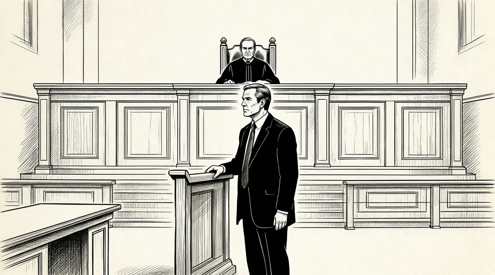

第46章 两难抉择

交易！交易！交易！20世纪80年代的美国的确是一个充斥着交易的时代，不过这些交易全都是负债经营的。道琼斯工业指数在1964年9月是875点，到了1982年新年那一天，道琼斯指数再次回到了875这个数字上，这也就意味着在过去17年的时间里，它没有任何变化！1不断增长的通货膨胀率让公司的利润增长成为泡影，但是似乎没有公司受到影响，它们早就准备好了支票，除了普通工人不能“享受”外，一般的白领们早已在安逸的房间里享福了。管理者们拿着公司的钱邀请下属去打高尔夫球或者去星级宾馆消遣。草率的公司运营、松散的流程管理，还有愚蠢到没有任何头脑可言的官僚作风，让人们辛辛苦苦挣来的钱在别人的消遣中被挥霍掉了。220世纪80年代初那几年，股票的情况就好像涤纶西装那样不值钱，但之后，一切发生了巨大的变化，随着美联储主席保罗·沃克尔的上台，通货膨胀率得到了控制，原本高达15%的利率开始平稳降下来。精明的投资家们也开始注意到当时美国国内商业出现的膨胀趋势。面对当时借贷利率相对较低的局面，一些公司的潜在买家们找到了生财之道：利用公司自有资产作为另一笔交易贷方的担保——这种做法有点像在房产按揭中拿到了100%的贷款比例——但这就是那些公司潜在买家的经营方式，他们不需要支付一分钱。对于这些人来说，投资组建一家公司的付出和为一家柠檬汽水厂选厂址没有金钱上的区别。3于是华尔街兴起了一股风潮，投资者们疯狂地重返华尔街，期望能在混乱的投资市场中分一杯羹，但他们手中没有资本，有的只是从别人手中借到的那些资金，于是这也见证了企业兼并的开始。
在第一批收购金融家中有一个人叫杰罗姆·科尔伯格，他这样描述了当时投资市场的局面：“我们只是拿回了本应属于股东们的财富和价值！在这个问题上，美国公司（CorporateAmerica）应负很大的责任，人们应该问一问，为什么他们不选择降低成本呢？”4
1984年，当成为垃圾债券的低档债券开始登堂入室般走上投资市场的舞台时，资金市场又开始呈现出另外一幅景象。对于这种垃圾债券，更体面的说法是“坠落的天使”，大多是类似于宾州中央铁路公司（1968年，宾州铁路公司和纽约中央铁路公司合并，成为宾州中央铁路公司）这样的企业发行的。为了尽快摆脱破产的尴尬局面，这些境况不佳的公司才选择发行垃圾债券来拯救自己。5不过那时只有为数不多的几家公司才是有针对性、有目的地发行垃圾债券，由于垃圾债券被普遍认为是高风险的，所以发行垃圾债券的公司的借贷利率通常会很高，从这个角度来说，垃圾债券大多都带有灰色的成分，是人们不得已而采取的一种方式。
那些在华尔街从事垃圾债券工作的人往往被认为是回收废品的。这些人要么是寻找垃圾债券发行方的银行家，要么是受困于债务纠纷的分析师。银行家每天为商业噩梦所惊扰，而分析师的生活更加悲惨，不是在计算文书上的数字，就是在计算资产负债表，再有就是发掘那些破产的银行家、律师、气急败坏的投资者，还有那些穷凶极恶的管理人员的生活逸事……
但一切在迈克尔·米尔肯内部交易丑闻爆发后德崇公司破产的那一刻开始发生了变化。在米尔肯东窗事发前，他非常轻松地成为了华尔街最具影响力的人，当时尽管进行垃圾债券交易的风险性极高，但是购买一小部分还是利大于弊的，因为从当时的大环境来看，风险相较于高企的债券利率已不值一提，换句话说，在当时的大环境下，垃圾债券在总体上还是有一定的安全边际存在的，这种情况就像香烟对人们的危害在一定范围内是可以接受的。
不久后，人们对投资经理的态度发生了变化，他们用投资者的钱来投资高回报的垃圾债券的做法不再被认为是轮盘赌那样的冒险行为。事实上，发行垃圾债券已经逐渐成了一种风潮，而且光明正大，这一点和之前人们对其的态度俨然就是180度的大转弯。一家资金雄厚、实力不凡的大公司很可能是被持有垃圾债券的公司收购来的，而以前的资产负债表也将因此转化成负债累累的瑞士奶酪，企业掠夺者就是这样拿着垃圾债券大摇大摆地进入公司的，而他们的目的就是实现对公司的“恶意收购”，将自满于现状的公司杀个措手不及。恶意收购的买家通常会以一副非常友善的面孔接触目标公司，但是最终完成这项收购的往往并不是最初这个所谓友善的买家，而是另外一个人，而且后者在经济上的能力肯定要强于企业掠夺者。在这个过程中，银行方面的费用高昂得令人难以置信，因此，银行家们为了节省开支，不得不放弃等待生意找上门的机会，而选择自己出去寻找合适的商机，他们的渠道就是巴菲特所使用的标准普尔指数1000，事实上，巴菲特本人就是通过《穆迪手册》来寻找到“烟蒂”型股票的，《穆迪手册》对于巴菲特的作用就像标准普尔指数对于那些商家的作用一样。这股并购浪潮通常只征得了一方的许可，引发了公众的广泛关注，每天都会有针锋相对的一己之见见诸报端。而迈克尔·米尔肯年度垃圾债券会议的主题“掠夺者的盛宴”6则成了当时那个时代的真实写照，成了那个时代的代名词！
不过巴菲特自己是不赞成这种垃圾债券交易的，对于交易把富人从股东变成经理人和公司掠夺者的做法他十分不屑，因为这个过程无论给银行家、经纪人还是律师等人带来的都是无尽的伤害。7正如巴菲特自己所说：“我们决不会进行垃圾债券的交易！”但是这并不是20世纪80年代的通用做法，在那个时代，没有一笔交易不是在负债经营的大前提下完成的，因此巴菲特的理念就显得有些格格不入。而对于那些在经济萧条期出生的人来说，债务关系是可以利用上的，只要你小心一点对待它，那么债务关系在很大程度上就是一个可以依赖的帮手。到了80年代，债务关系更是成为一个“杠杆”，人们通过借贷来实现自己的利润。而这个“杠杆”来得似乎有些不是时候，当时美国政府正处于里根的统治下，属于“里根经济学”推行之际，面对急剧扩大的财政赤字，美国政府当时实行减税政策，这样做的目的是希望最终可以提高税收收入，从而刺激经济增长。但是减税的问题在当时引发了社会上激烈的争论，一方面，经济学家们为减税是否可以带来理想的答案而争执不休；另一方面，减税的做法究竟可以多大程度上改善赤字的负面影响也是经济学家们关心的焦点问题。随着美国本土对消费的热衷，再加上借贷的影响，美国经济被不断扩大的内需拉动了，人们也开始习惯了用信用卡来支付账单。一种全新的“平衡观念”逐渐在人们的心中建立起来，消费激增下的账单出现了严重的失衡现象，即便消费者到死亡的那一瞬间，账面上的透支金额依然不可能偿付，这也就形成了我们所说的坏账。在经济萧条时期人们形成的囤积财富的观念荡然无存，一种全新的经济观念应运而生：花明天的钱买今天的东西！
但和大多数人不一样，巴菲特依然选择用现金付账，依然在公司收购的过程中扮演救星的角色。在1985年2月的某个清晨，巴菲特被好友汤姆·墨菲的电话吵醒了，当时巴菲特正巧在华盛顿小住，墨菲这通电话的目的就是告诉巴菲特他刚刚收购了美国广播公司。
“你一定要过来，你要告诉我如果要完成对美国广播公司的收购，我需要怎么做，具体来说，我需要如何支付这笔收购资金？”8两人的关系很好，所以在巴菲特面前，墨菲在言语上不需要避讳什么。而在当时，美国广播公司并不是只有巴菲特和墨菲这一个买家，很多公司掠夺者都在觊觎这块肥肉，从公司到业内外的人士都在看墨菲的好戏，看看他能不能以巴菲特风格，出于与对方公司的交情来完成这笔收购。9
让我们看看巴菲特是如何回答墨菲的吧：“不要想别的，想想这将如何改变你的命运和你的一切！”作为一个虔诚的天主教徒，身为天主教徒的墨菲是不应该在任何事情上浪费一分钱的——这又不是好莱坞！也许在巴菲特的心中他早已经想过了在谦逊的墨菲与充满诱惑色彩的电视传媒市场之间的矛盾，毕竟墨菲已经是一个即将退休的人，而且墨菲本人也相信自己和花花绿绿的电视传媒市场存在不可调和的矛盾。10但是巴菲特接下来的动作表明他自己并不害怕所谓的改变，至少他接下来的行动让人们认为是这样的，他建议墨菲给大都会/美国广播公司（CapCities/ABC）聘请一位投资者，一旦公司感觉到了企业掠夺者那些恶意的眼光，那么这位投资者就能对公司实施保护。但谁又能充当大都会/美国广播公司的保护神呢？几乎没有任何悬念，墨菲选择了巴菲特。对于好友的信任，巴菲特没有拒绝，很快，他就以伯克希尔的名义斥资5.17亿美元购买了大都会广播公司15%的股份。11
巴菲特以救市的方式从众多企业掠夺者手里抢回了大都会广播公司，他也在不知不觉中卷入了美国历史上耗资最大的媒体交易，成了这笔交易中不可不提的一方。也许下面这个数字就能说明一切，伯克希尔在大都会广播公司的份额比例是内布拉斯加家具城在大都会广播公司的6倍之多！对于当时经营并不景气的美国广播公司，巴菲特和墨菲也投入了35亿美元的巨资，要知道当时大都会广播公司在网络传播业的排名已经跌到了第三位，35亿这个数字还是相当可观的。12也许在很长时间以后，巴菲特对于网络传媒的热情会有所降低，“网络媒体并不是无所不能的！”类似的评论也许在以后的某个时间会从巴菲特的嘴里冒出来，但是他已经亲眼见证了电视这个产物从无到有、从弱到强的崛起过程。13巴菲特知道无论是树立公众价值取向，还是挖掘自身的潜力，媒体的作用都是无比巨大的，而这两方面产生的合力更是令人难以置信！如果将美国广播公司和大都会广播公司整合在一起，那么这个全新的产业将拥有100家发行商、若干全天24小时不间断播放的电台、24个主流电视频道，还有超过50个有线电视网络。14对于这一切，巴菲特是如此希望可以早日进入大都会/美国广播这个体系，以至于在面对大都会/美国广播公司与《华盛顿邮报》的董事职位的抉择时（根据美国联邦通信委员会的相关规定，大都会/美国广播公司与《华盛顿邮报》存在可能的电视网络利益上的冲突），巴菲特毫不迟疑地选择了前者。15他之所以会这样做的一个原因是《华盛顿邮报》首席执行官凯瑟琳·格雷厄姆和儿子唐·格雷厄姆（后者于1991年顶替母亲出任首席执行官）都不会阻拦。《华盛顿邮报》以及格雷厄姆家族已经不再需要巴菲特的鼓励，现在他们需要的只是巴菲特的同意而已，巴菲特已经起不到任何实际的作用。考虑到这些因素，巴菲特在做出决定的那个晚上睡得很安详，脸上挂着愉快的笑容。
1985年对于巴菲特是一个值得纪念的年头。当巴菲特把通用食品公司出售给菲利普·莫里斯时，仅仅这一只股票就为伯克希尔–哈撒韦赚回了3.32亿美元的收入，在不到一周的时间里，《福布斯》也开始了对巴菲特的关注，在《福布斯》列出的400位世界富豪中，就有巴菲特。当时，想要进入《福布斯》的富豪名单，意味着你的身家必须要在1.5亿美元以上，巴菲特做到了，那时的他只有55岁。能在55岁就成为亿万富翁，这的确不简单，而且要知道并不是所有的亿万富翁都有进入富豪榜的实力——14个富豪中只有1个才能有这样的幸运，从这个角度来讲，巴菲特的经济头脑绝对不一般！究竟是什么让巴菲特有如此神奇的魔力？也许把他小时候最喜欢读的书改名为《赚到100万美元的1000招》更能解释这个现象，但是在童年的幻想中，巴菲特从未想过能积累如此巨大的财富。
在伯克希尔–哈撒韦刚刚上市的时候，股票的票面价值只有7.5美元，但现在，在巴菲特的领导下，伯克希尔的股票发生了质的飞跃，每股飙升到了2000美元！尽管如此，巴菲特并没有选择拆股，因为随着股票的增多，公司需要额外支付一笔没有意义的经纪人费用。当然，这是毋庸置疑的，但是这样的伯克希尔更像是一个合伙企业，或者说是俱乐部，过高的股价也让人们把全部的注意力都集中在了伯克希尔上。
随着伯克希尔–哈撒韦在金融界受到的关注日益剧增，巴菲特也开始在业界声名鹊起。现在当他走进一个投资者聚集的大厅时，人们的注意力将瞬间集中在这位55岁的富豪身上。对大都会/美国广播公司的收购的确改变了巴菲特的生活，大屏幕也不再是巴菲特遥不可及的事物，在著名的美国肥皂剧编剧阿格尼丝·尼克松的劝说下，巴菲特在尼克松导演的电视剧中过了一把演员瘾。巴菲特和尼克松在有一天与墨菲共进晚餐时相识了，席间，他接到了尼克松的邀请，在《爱情》一片中出任角色。一般情况下，那些身为首席执行官的大人物们对于这种客串是避之唯恐不及的，但是巴菲特并没有那样做，他很喜欢自己在银幕上的处子秀，最后在剧组为他结账后，巴菲特并没有兑现那张支票，而是把支票和剧照装裱起来放在办公室里留作纪念。对于化妆和演出的兴趣也许就是巴菲特性格中的一部分，后来有一次在朋友的宴会上，巴菲特还扮成了美国摇滚乐灵魂人物“猫王”的模样。在出席时任美国总统里根组织的一个晚宴时，巴菲特系上了钟情的黑色领结，带着女儿苏茜一同出席，当时出席这个晚宴的还包括著名影星史泰龙、世界知名时装设计师唐娜·凯伦等人，而且这两个人还与巴菲特同桌就餐。在出席奥斯卡颁奖礼时，巴菲特带上了很少在公开场合露面的同居女友阿斯特丽德·门克斯，当时阿斯特丽德穿了一件看上去是从旧货店里淘来的礼服，但她并不认为这样做有什么寒酸，依然露出了自信的微笑。在颁奖礼结束后，巴菲特和著名的乡村音乐女歌手多莉·帕顿共进晚餐，帕顿给巴菲特留下了很深的印象，巴菲特认为帕顿既可爱又讨人喜欢，但是他却没有让自己在帕顿心中留下浓重的一笔，要知道之前面对很多女性，巴菲特都能轻松地在异性面前给对方留下很好的印象。
在参加凯瑟琳·格雷厄姆举办的宴会上，巴菲特的位置总是会被安排在当晚两位最重要或者是最有意思的女性中间，这样，他可以充分发挥自己在语言上的天赋，但是巴菲特从来没有发掘出对于诸如天气、体育这些闲谈话题的驾驭能力，为了引入正题而做一下铺垫对于巴菲特来说，往往是一件浪费时间的无聊之事。
事实就是这样，难道不是吗？吃饭的时候，你身边坐了两个从来没有碰过面的人，而且以后也不会再碰面，这种感觉肯定会很奇怪，很压抑！不管这个人叫什么，什么贝比·佩利、马雷拉·阿涅利，还是戴安娜王妃，凯瑟琳总是能从对方的身上找到她所欣赏的地方，但是面对她们我从来找不到可以聊天的话题，和戴安娜王妃沟通可没有和多莉·帕顿交流那样有趣，面对她，我说些什么呢？“查克（查尔斯）怎么样？城堡又有什么新消息？”
生活在1987年那个时候的亿万富翁总需要性格中有点儿冷酷的味道，巴菲特就是这样，前进的时候他不再依赖凯瑟琳·格雷厄姆的鼓励，她在出席活动的时候也不再需要巴菲特的“护送”，两人之间的感情也慢慢淡了下来。但美国权贵们对凯瑟琳的热衷度并没有降温，这很大程度上要牵扯到另外一个人——罗伯特·麦克纳马拉。麦克纳马拉曾在肯尼迪和约翰逊两任美国总统执政期间（即越南战争期间）担任美国国防部部长，1987年他不幸丧偶，但是在凯瑟琳身上，这位睿智的、有着钢铁般意志的美国高官找到了久违的友情，而且和凯瑟琳的友情维持了很长时间。作为越战时期的国防部长，麦克纳马拉是美国军方提出所谓“消耗战略”的发起者，以至于很多人在提到越战时都认为这是一场“麦克纳马拉式的战争”。除了越战外，另外一个让麦克纳马拉进入史册的就是“五角大楼文件案”，是他发动了针对美国政府在东南亚问题上的调查，而正是由于“五角大楼文件案”，凯瑟琳和她的《华盛顿邮报》才得以进入美国的历史教科书，她因为披露“五角大楼文件案”也永久地登上了历史舞台。不久后，麦克纳马拉和凯瑟琳的关系愈加密切，《华盛顿邮报》董事会更是用“凯瑟琳的第三任丈夫”来形容两者之间的关系。也许就是为了印证这一点，或者是为了证明两人之间的关系，凯瑟琳任命麦克纳马拉为《华盛顿邮报》的董事，但这已经是巴菲特离开之后的事情了，从一开始，巴菲特和麦克纳马拉之间的关系就很难用“朋友”形容，随着时间的推移，两人更像是相敬如宾的陌路好友。
巴菲特和麦克纳马拉之间究竟有没有共同点？事实上是有的，在处理人际关系时，巴菲特也能像麦克纳马拉一样利用社交手腕搞定周围的人，但是这位奥马哈先知面对的问题并不仅仅限于人际层面，更麻烦的同样也是没有预料到的是，由于巴菲特蜚声海外，他的人身安全甚至都受到了威胁。仅举一事为例，两名来路不明的男子出现在伯克希尔位于内布拉斯加州奥马哈市的基威特大厦，其中一人手持仿制.45口径的手枪挟持了巴菲特，要求10万美元的赎金。不过好在安保人员和警方立即介入此事，巴菲特毫发无伤地走了出来。事后，挟持者表示自己不过是为了买一处农场而想从股神那里借点钱。16对于这一切，巴菲特也采用了低调处理的手段，在对秘书格拉迪丝·凯泽描述这一遭遇时，巴菲特语气中带了很多调侃的味道。即便发生了类似的恐怖事件，他也没有像人们建议的那样雇用贴身保镖，因为在巴菲特看来，属于自己的个人时间和自由太少了，保镖只能让原本不多的自由成为泡影，不雇用贴身保镖并不代表巴菲特对个人安全问题很大意，他的办公室里安装了摄像头，办公室的大门则是重达300磅的安全门，一般人要想破门而入并不容易。17
名气带给巴菲特的除了人身安全上的隐忧外，更多的是私人空间的减少，总是会有陌生人打电话到巴菲特的办公室，希望能与这位亿万富翁直接对话。这些陌生人认为没有人可以帮他们，他们请求巴菲特给他们的时间也不长，而且他们相信巴菲特对于他们要说的一切肯定会感兴趣。后来，格拉迪丝·凯泽给巴菲特想出了一个办法，让这些陌生人给巴菲特写信。18从那时起，巴菲特总是能收到有关询问伯克希尔–哈撒韦股票的信件，刚开始，信件的内容还是很和善的，比如向巴菲特咨询有关山楂疗法的事宜，或者是希望巴菲特能够为一种全新的冰激凌配方提供启动资金，但是后来，信件内容的尺度开始放宽。“巴菲特先生，我已经厌倦了平淡的人生，我被富人的生活所吸引，对于财富的向往已经灼热了我身体的每一寸肌肤，你很有钱，能给我点吗？”19这些只是若干信件中的一封，更多的信件还是人们抱怨自己的命运和生活。“现在我的脑海里除了信用卡和账单之外没有别的！”20
虽然被这些信件包围着，但巴菲特并没有把这些来信当作垃圾扔掉，相反他把这些信件收藏了起来，并分门别类加以保存。其中有很多信证实了他对自己的定位——比如行为榜样或老师。当然，这些信件中也不乏能够打动巴菲特的东西。如果他有时间，而且他认为这样做值得的话，他会亲自给对方回信，用坚定而且毫不迟疑的口气告诉来信者，出现的问题都应该是写信人自己负责！这一切就像是写信的人是巴菲特的孩子一样，巴菲特会在信中教对方如何应付出现的麻烦——告诉他们的债务人自己目前的情况是多么潦倒，尽可能地争取较低的偿还利率，好为自己偿还债务争取更多的时间。这些话更像是巴菲特的独白，他深知陷入债务危机是一件多么麻烦的事情，特别是当债权方是信用卡部门或者垃圾债券部门的话，麻烦将会接踵而至。
尽管巴菲特是众人眼中的股神，但是他自己的孩子们并没有在投资方面受到父亲的熏陶。甚至有关如何处理大宗金钱的技巧，巴菲特也没有传授给子女们，但是他们却从父亲身上学到了价值连城的一课，就是对待债务的态度。巴菲特对于欠债深恶痛绝的观点也遗传到了孩子们身上，这其实已经是非常幸运了。对于债务，甚至是任何有关钱的话题，巴菲特的态度向来是非常一致的，他从来不会乱花一分钱，从这一点来看，巴菲特对待子女的态度和对待陌生人没有什么区别，但是在面对孩子们体重的问题上，巴菲特又非常愿意拿钱作为交易的筹码，让孩子们去控制自己的体重。
女儿苏茜就是一个很好的例子。齐肩的短发、精心雕琢的脸庞，看上去30岁出头的苏茜和25岁的妙龄女孩没有什么区别，但唯一令她不满的就是身上多出来的几磅体重。于是，巴菲特给女儿送上了一笔合适的买卖：如果苏茜能够减肥成功，她将获得一个月内购物免单的机会，支出全部由巴菲特负担，而且一个月内购物不设上限，但如果苏茜的体重出现反弹，那么她必须要把消费的全部金额还给巴菲特。看上去这样的计划比双赢政策更容易俘获人心：在这个交易中，没有人的利益会受到伤害，也没有任何风险存在，特别是对于巴菲特，无论结果怎么样，他都算是赢了。如果女儿能像自己预料的那样减轻体重并保持不反弹，那么巴菲特也算是心愿达成，而且只有在这种情况下，他才会掏出钱包里的支票，而苏茜也能买到漂亮的衣服。正是在这个美丽的结果的驱动下，苏茜开始了节食减肥，当她“得偿所愿”，体重达到一个理想的数值时，母亲苏珊给她快递过来一张信用卡，卡片上这样写道：“玩得开心点！”
刚拿到“减肥奖品”的时候，苏茜的态度还是小心翼翼的，她不敢去花卡里的一分钱，她怕父亲赖账不给钱还需要她自己为衣服付款，但是慢慢地，苏茜意识到这并不是父亲的玩笑，一切是真的！她正式进入了自己的疯狂消费月，频频出现在令人眼花缭乱的商场里，这也是她人生中第一次这样肆无忌惮地消费。不过每次回到家里，经过餐桌时，苏茜都把消费单据卷起来，自己也不敢面对近乎疯狂的购物结果。换来的结局是，每天当苏茜的丈夫艾伦回家时，看到妻子大包小包的衣服，都会惊讶得大叫上帝。30天后，苏茜得到了这一个月疯狂购物的结果，这一个月她总共花掉了4.7万美元！
看到这个数字，苏茜也有点儿紧张了。“也许爸爸看到这一切后会郁闷得要死！”深知父亲个性的女儿这样说，所以苏茜也不得不去搬救兵。在巴菲特面前，妻子苏珊的确很有说服力，但是苏茜知道当面对金钱话题时，哪位救兵对她来说更有帮助——这个人就是凯瑟琳·格雷厄姆。在和巴菲特三个子女相处的过程中，凯瑟琳并不认识彼得，更谈不上了解；而霍华德总是认为凯瑟琳，这个《华盛顿邮报》的首席执行官是一个很难相处的对象，他在她家里的时候，要么害怕自己坐在了不该坐的位置上，要么害怕打破她家的东西；只有苏茜向凯瑟琳伸出了友谊的双手，两个人也建立了很好的关系。21正因为如此，当苏茜给凯瑟琳打电话，述说这个由减肥引发的故事时，凯瑟琳答应如果需要，她肯定会帮忙！
不过也许苏茜有些杞人忧天了，毕竟她和父亲是有言在先的，巴菲特最终还是付了这份4.7万美元的账单，虽然表现得很客气也很和善，不过之后巴菲特把自己的朋友们叫到一起，抒发心中的不满：“如果你们的太太花掉这么多钱，你们会怎么想？”男人们的回答当然都向着巴菲特，认为这样一笔大单有点儿过火，但是女士们的答案却出乎巴菲特的意料，这些贤内助们认为巴菲特不应该从自己的朋友身上找安慰，其实巴菲特应该庆幸，要知道4.7万美元并不是一个很夸张的数字，言外之意是苏茜还可能玩得更疯！22
也许是从苏茜事件上得到了教训，当巴菲特与儿子豪伊打赌时，他选择了以豪伊缴纳农场收入比例的高低作为赌注。这个赌约依然和体重有关，体重的高低直接影响到豪伊向巴菲特缴纳的农场收入比例。巴菲特认为儿子最适合的重量应该不超过182.5磅，如果高于这个数字，豪伊要向巴菲特缴纳的比例是26%，而低于182.5磅这个体重，份额也相应减少到22%。用豪伊自己的话说：“这就是典型的巴菲特式的体重检测手段，我自己并不介意他这么做，事实上这代表了他对我的关心，我并不在意缴纳份额的多少，但我知道，就算是交22%的租金，父亲也是赢家，他从我这里拿到的支票也比任何人都多！”23的确，不管最后怎样，巴菲特都不是输家，要么得到一个减肥成功的儿子，要么得到更多的利润分成。24这就是典型的巴菲特式作风，就像他的一个朋友所说的那样：“巴菲特是双赢政策的大师，如果这笔买卖不会给他带来好处，他是肯定不会插手的！”
在巴菲特的三个孩子中，彼得是在经济方面对家里依赖最少的一个。当母亲苏珊搬到华盛顿后，彼得夫妇就把自己在华盛顿大街的公寓让给了苏珊，自己则搬到了位于斯科特大街的公寓居住。那时，彼得依然没有放弃自己的音乐梦想，在为一个刚刚创办的有线电视台MTV创作一段长15秒钟的背景音乐，而他也把在音乐事业上的这种成功带到了商业上。尽管在巴菲特的三个孩子中，彼得的经济头脑是最差的，但是彼得成功地把伯克希尔的股份和音乐天赋结合起来形成了自己的事业，并最终过上了富庶的生活，完全超脱了金钱游戏的范畴。但是到了20世纪80年代中期，彼得开始思考父亲所说的话。“你认为人们真的欣赏你的才能？没有人特意到超市里买你哥哥豪伊种出的玉米！”从父亲的这番话里，彼得意识到如果不是因为自己是股神巴菲特的儿子，他的音乐才华不会被人赏识，没有人会单纯因为自己的音乐才华去雇用广告经纪，彼得一下子意识到自己的成功完全来自于父亲的庇佑，所以如果他希望自己的才华真正被人们认可，就要彻底和巴菲特这个名字断绝关系。为了达到这个目标，彼得不惜牺牲任何代价。于是之后大家看到了这样一个彼得，一方面他继续从事商业性的工作，另一方面，彼得并没有放弃在音乐上的追求，与新世纪公司签约后做了自己的音乐小样，并在1991年推出了名为“纳拉达”的专辑。25
母亲苏珊也没有放弃自己的音乐梦想，人们经常看到她出入彼得的音乐工作室，在洛杉矶的时候她很喜欢和自己的外甥比利·罗杰斯一起唱歌。这时的比利正在尽自己最大的努力让生活重回正轨，为此他特地给巴菲特写了一份悔过书，称自己在过去的生命中“浪费了太多的机会”，而现在自己已经准备好了，不再让任何机会从身边溜走。26为了让自己能重新开始，比利打算购买一处公寓作为生活全新开始的标志。在这封信中，比利表达了这个想法，并希望巴菲特能够不计前嫌，帮自己支付房屋的首付款。对于比利这个瘾君子和爵士吉他手来说，这封写给巴菲特的信他的确是动了一番心思的，因为它显露出非同寻常的金融素养。在对待比利的问题上，苏珊的态度一直是非常支持的，不过没有得到巴菲特的同意，苏珊也断然不敢轻易帮助比利缴纳房屋的首付款，因为这毕竟不是一个小数目。
在巴菲特的回信中，他并没有简单地拒绝，而是用了很大的篇幅来阐述这个问题，语重心长的态度完全是一个长辈的口吻。在信中，他引用了好友芒格的一番话，“酒精、毒品和债务是让人沉沦的三大杀手”，巴菲特认为比利向自己借钱支付房屋首付款的做法完全没有给自己留任何退路，而是把自己推向了悬崖的边缘。
打个比方，如果你要驾驶一辆负重10000磅的卡车多次通过一座桥，那么建造一座负重达到15000磅的桥，要比建造一座负重为10001磅的桥要好得多，我用这个比喻是想说明，如果你身上有太多的负债，甚至这个数额超过了你手里的现金，那么这样的做法肯定是错误的！从我个人的角度来说，就算我向别人借钱，总数也不会超过我存款的25%，当初我只有1万美元时是这样，有希望能挣百万美元时也是这样！27
不过比利并没有放弃，之后又给巴菲特写了一封信，而这封信的字迹潦草了很多，在第二封信中，比利希望能从巴菲特手里拿到一些贷款。“要知道我正在把我的生活一点一点整合起来，我正在申请夺回儿子的监护权。”28但这次巴菲特的回答依然没有让比利得偿所愿，这不仅是因为在一切涉及钱财的问题上，巴菲特的态度总是非常坚定，而且他也深知，不能轻易相信一个瘾君子的话！作为比利姨妈的苏珊也是爱莫能助，虽然她一直相信人性中善良的一面，不到万不得已她绝对不会放弃任何一个人，但是她又不能违背巴菲特的意愿对比利进行资助，所以苏珊只能从精神上鼓励自己的外甥，在比利遇到麻烦的时候，她总是尽最大可能地全身心照顾比利。
苏珊对待自己的外甥是如此，对待所有人的态度也是一样，一个亲戚这样形容她：“苏珊就是一个移动的红十字会！”1984年，当苏珊向巴菲特坦承了自己在婚姻上接近出轨的行为后，两人对婚姻的看法又有了新的理解，从那以后，苏珊对于公益事业的热情也更加高涨。但同样是在1984年，苏珊的身体出现了异常反应——脾脏和胰腺之间长了一个脓肿，苏珊不得不住院接受治疗，医生对她实施了探测手术，但并没有找到苏珊患病的症结，就在人们为此而担心时，苏珊的病却不治而愈了，她再次成了人们熟悉的那个健康而博爱的人。苏珊也将自己的大部分精力都放在公益事业上，对那些需要帮助的人伸出援手。此外，她还在位于华盛顿大街的住所里举办化装舞会，尽管这里面积不大，但苏珊还是尽自己最大能力帮助那些人。当然，她也没有因此疏忽自己的生活，闲暇时，她开始学起了骑自行车，把家人们叫在一起举行家庭晚宴和节日庆典。在这些场合中，苏珊的着装都很随便，要么是牛仔，要么是运动服，而且她还摘掉了一直戴着的假发套，淡棕色的头发映衬着她愉快的面庞，整个人也格外美丽。
在苏珊病愈的这段时间里，巴菲特对她的所有要求无不有求必应，还同意苏珊对拉古纳海滩的住所进行装修，这里此前一直是刚租下时的样子。装修的这段时间里，苏珊经厨师拉克·纽曼的儿子汤姆介绍认识了室内装潢设计师凯瑟琳·科尔，科尔除了是一名室内设计师外，还是一名塑身教练，此前她也从事过护士的工作。在科尔的帮助下，苏珊把拉古纳海滩的居所装饰成极富现代气息的风格，室内明快的颜色搭配也是苏珊非常欣赏的，之后，科尔与苏珊的友情进一步发展，科尔接下了替苏珊购买礼物的工作。29而在金钱问题上，苏珊与巴菲特的矛盾并没有因为她生病而有所缓和，一直以来，巴菲特的吝啬和苏珊的豪爽性格之间的矛盾总是能引发双方的纠纷，这些争论也多次成为媒体曝光的焦点，但巴菲特向苏珊支付的补贴并没有受到什么影响，而且还出现了增长，虽然增长的速度没有苏珊预想的那么快，但也还是非常可观的。现在，苏珊完全可以支付科尔的工资，而科尔也成为了苏珊的左右手，除了帮助苏珊购买小礼物外，她还出任了苏珊的秘书一职，帮助她打理日常行程安排，这样，苏珊可以腾出更多的时间来照顾家人。在三个孩子中，豪伊总是兄妹三人的焦点，苏珊对他的关心也最多，为了照顾豪伊的子女以及自己收养的孩子，苏珊不得不经常往返于内布拉斯加州与加州的拉古纳海滩住所之间。在女儿苏茜怀孕后，苏珊的目的地又多了一个，更多的时候她要远赴东海岸到苏茜位于华盛顿的家，照顾这个即将第一次生产的女儿。
怀孕期间，苏茜和丈夫艾伦决定对华盛顿的住所进行装修，理由很简单，室内楼梯太多，不利于孕妇活动，而且厨房很小，距离后花园又太远。苏茜的设想是修建一个大厨房，至少可以容纳一张双人餐桌，而且要在厨房后面增加一个可以直通花园的小门。不过这样的设想很快就被否定了，苏茜大致算了一下，装修的全部费用大概在3万美元左右，而苏茜夫妇没有这样的经济实力。再加上由于体重反弹，苏茜还要退回父亲预先支付的4.7万美元，好在“适时”的怀孕帮了她，大家还记得之前苏茜和父亲有关体重的那个赌约吗？虽然苏茜在赌约履行期中体重增加，但是怀孕能帮她免除一切义务。但3万美元的房屋装修费用还没有着落，虽然巴菲特也认为衣服比珠宝的性价比更高，但是苏茜和艾伦都知道衣服是不能典当成现金的，唯一的办法就是苏茜向父亲请求借款。
但听听巴菲特是怎么说的吧。“你们为什么不去银行呢？”这位亿万富翁用一句话就拒绝了自己的女儿。当然，巴菲特也给出了自己的理由：某位效力于内布拉斯加州橄榄球队的著名四分卫球员退役了，但球队绝对不承诺给球员的儿子首发四分卫的位置，这种类似于传承、世袭的做法让巴菲特很头疼，更触动了巴菲特心中对于“公平”的理解的神经，甚至打乱了他在学生时代树立起来的社会信仰模式。尽管巴菲特坚持自己的底线，但是这样的回复对于子女来说肯定是难以接受的，苏茜对父亲的世界观并不认同。“即便是涉及我们的问题，他也不会放弃自己的原则！”这就是苏茜给父亲的评语，“从出生到现在，我从父亲身上学到了很多，是啊，我已经从这件事上学乖了，在特殊的时间和环境下，你必须要学会放弃！”30
这件事情过去不久，医生告诉苏茜要安胎静养6个月，这6个月的时间对于苏茜来说是漫长而难熬的，每天陪在她身边的就是一台很小的黑白电视机。当凯瑟琳·格雷厄姆看到这一切时她有点吓坏了，格雷厄姆本来是带着自家厨师做好的饭菜过来看望苏茜的，但是眼前的景象却令她有些惊讶，她不禁抱怨巴菲特竟然没有给女儿准备一台彩色电视机！所以当苏茜的母亲苏珊得知女儿的情况时，她二话不说就赶了过来，在华盛顿陪女儿住了几个月的时间，并在第一时间对女儿的房子进行了装修。“沃伦居然就这样听之任之，太过分了！”苏珊抱怨道。但是装修的所有费用都是出自巴菲特的钱包，纠结在两个人之间的金钱游戏从来没有停止。通过这件事，人们对巴菲特的节俭和苏珊的慷慨又有了更深的认识。不过既然两个人已经在金钱上达成了这样的协议，事情的本质也不会有什么改变。
1986年9月，苏茜的女儿埃米莉出生，那时巴菲特家族已经是三世同堂，算上埃米莉以及领养的孩子，巴菲特夫妇的第三代已经有了8个成员，8个孩子分别居住在旧金山、奥马哈和华盛顿特区。翡翠湾居所的装修接近尾声时苏珊放慢了装修的速度，她把这里改成了一个朋友们特别是家人和孩子们进行娱乐的场所。回到位于旧金山的家后，苏珊搬到了太平洋高地的百老汇街住，因为那里离小儿子彼得的新家所在地斯科特大街很近。这次，苏珊选择的居所面积很大，是一幢四层的复式结构的公寓，从这里可以直接看到整个金门桥，视野可以一直延伸到旧金山湾的阿尔卡特拉兹岛。
那时，科尔已经正式出任了苏珊的私人助理，她的主要工作就是帮助苏珊打理行程。“你完全可以兼职！”苏珊这样告诉科尔，“这样你就有足够的时间来照顾你的两个孩子了。”随后，科尔知道了自己并不是单纯地为苏珊工作，而是在为巴菲特基金会服务：她每天为苏珊打理行程计划，安排她的日常活动，监管基金会的工作人员队伍——这些工作人员大多由家庭主妇、跟班人员和苏珊的朋友组成，而且苏珊的朋友们很多都是无偿服务的。此外，科尔还负责派发苏珊送给别人的礼物：将这些人分类、选礼物、包装、运输，还要随时监控派送流程，并对这些进行记录，而且所有的礼物还不能重复。31那时苏珊的两套房屋都交给科尔找人装修，一处位于拉古纳海滩，另外一处就是位于旧金山百老汇街的这处，拉古纳海滩居所的装修工程已经开始，而旧金山居所的装修还要两年才能完工。科尔的丈夫、从事消防员工作的吉姆有时也会过来帮忙。帮忙的人中还有苏珊在欧洲旅行时认识的朋友罗恩·帕克斯，一位注册会计师。在基金会，他主要负责资金支出和缴纳各种税费，不过这份工作是无偿的，帕克斯不会得到一分钱的工资，尽管如此，他对这份工作依然十分热衷。“这就是我们的苏珊集团！”帕克斯打趣道。苏珊另外一位朋友的描述更加写实：“没有人能从这里拿走工资。”32之后，帕克斯和汤姆·纽曼住在了一起，苏珊也成了这两个人的好朋友。汤姆的母亲拉克就是前文中我们提到的凯瑟琳·格雷厄姆的主厨，不过她始终没有机会在基金会里展示自己高超的烹饪技巧。随着基金会工作人员队伍的不断壮大，现在在基金会工作的人员的数量已经远远超过了伯克希尔–哈撒韦高管层的人员规模。
在苏珊位于旧金山百老汇街的住所装修期间，苏珊的外甥罗杰斯把家从洛杉矶搬到了这里，摆脱了毒品的罗杰斯与苏珊一起筹划专辑的创作。一天，罗杰斯来到了彼得的音乐工作室工作，中午时分，他向彼得借了20美元后离开。此后几天，罗杰斯便音信全无。焦急的苏珊、彼得还有他的妻子玛丽开始四处寻找罗杰斯的下落，他们来到了罗杰斯在旧金山的公寓，门从里面反锁着，敲门也没有人应答，发生的这一切令三个人很着急，慌忙去找房东拿钥匙。就在三个人等房东找钥匙开门的这段时间，从某间公寓的唱片机里传出了一段旋律，歌中这样唱道：“告诉我你不会骗我，答应我你永远不会让我难过。”而另一间公寓里也传出了一首歌，西班牙歌曲《世事难料》……
似乎是等了一个世纪的时间，房东先生才拿来了钥匙，门被打开的一瞬间，苏珊他们三个都惊呆了，罗杰斯盘腿坐在地上，背靠在房门上，手臂上插着一支注射毒品的针管。他身边的唱机还在空转着，唱片应该在两天前就已经放完了，罗杰斯的身体冰冷，他死了！苏珊慢慢合上了外甥的眼皮，眼泪早已流了下来，彼得默默地走出了公寓，打电话去找救护车。33之后医院送来了尸检报告，罗杰斯是由于注射毒品过量而死。34
“他是一个那么可爱的孩子！”巴菲特这样描述罗杰斯，“不过他最后还是让毒品夺走了性命！”失去家人的痛苦一直弥漫在巴菲特的家里久久不能消散，听听巴菲特姐姐多丽丝所说的，也许人们就能知道其中的原因了，她说：“失去比利是苏珊这一生中经历的最大打击！”的确，罗杰斯的死，使苏珊不仅失去了一个外甥，更像是失去了一个儿子，这么多年，她对他的关心从来不亚于对豪伊和彼得的关心，而且，苏珊一直希望能把罗杰斯从毒品里拉回来，外甥的死让她多年的努力付诸东流，苏珊感到了前所未有的挫败感。
苏珊对于那些需要帮助的人们的热情，让巴菲特很感动，也很敬佩，他很欣赏苏珊在帮助别人时的那种勇气和能力。但是在这么多年所帮助过的人中，除了罗杰斯，苏珊并没有和其他人建立如此深厚的感情，别人也没有给苏珊留下深刻的印象。在那些需要帮助的人中间，有些是因为自己做出了错误的选择而受到了相应的惩罚，有些则是因为命运不济，但没有人像罗杰斯用那样的方式结束了自己的生命。那些需要帮助的人，常把苏珊叫作“圣母苏珊”。只要那些需要帮助的人求助于苏珊，她肯定会伸出援助之手，不过一次只能是一个，所以巴菲特总用“零售商”来形容苏珊的行为和受益人的范围。而在巴菲特本人看来，他自己就是一个“批发商”，用智慧和金钱尽可能地帮助需要帮助的人。在这个过程中，巴菲特把自己看成了一个老师，尽管职责不像是奥马哈的教师那样在三尺讲台上传道解惑。凯瑟琳·格雷厄姆和她的儿子唐·格雷厄姆是巴菲特最忠实的追随者，在和巴菲特交往的这么多年里，他们的思维也逐渐被巴菲特同化了。巴菲特最热衷进行的研讨会就是伯克希尔–哈撒韦的股东大会，最开始会议只在单数年进行，巴菲特很喜欢这种教导性质的交流方式，以至于他总是希望更多的观众可以过来倾听他的演讲。
1980年，巴菲特的这个梦想得以实现。在当时震动业界的一桩针对IBM公司反垄断的诉讼案中，巴菲特决定担当证人。出庭做证的还有一位来自《华盛顿邮报》的董事阿贾伊·米勒。但是两位证人在法庭上的态度有着很大的不同，米勒认为这本身就是一场令人痛苦的游戏：律师提出的种种问题根本就是在拷问，法官一直在诱使自己憎恨IBM公司。但巴菲特并不这么看，在法庭上，他显示了自己的专业素质，对于律师提出的种种问题都给出了自己的解释，他很享受这个扮演证人角色的过程。事后，米勒在接受采访时表达了对巴菲特的敬佩：“他是一位非常尽职的证人！”35令巴菲特对自己满意的地方还不止于此，鉴于这桩案件本身的轰动性，巴菲特的证词也作为案件审理的一部分被载入了美国的商业史册。
巴菲特早期的商业理念主要是在20世纪60年代他写给合伙人的信中体现出来的，原版手稿早已被珍藏起来，复印件则一直在华尔街流传，那些模糊不清的复印件就是他在华尔街被追捧的又一凭证。从1977年开始，在《财富》主编卡罗尔·卢米斯的帮助下，巴菲特每年写给股东们的信都会被装订成册进行出版。每年，巴菲特都会在伯克希尔年会上进行点评和展望，这些内容在1977年前从未公布，但在卢米斯的运作下，巴菲特的商业理念开始出现在大众的视线里，而且几乎达到了人手一册的程度。这些文字也被认为是进入商业的快速教程。巴菲特的文字朴实鲜明，又能引经据典，从《圣经》故事到《爱丽斯漫游奇境记》、《青蛙王子》等内容都可能出现在巴菲特的文字中。文章中大量的篇幅并不是描述伯克希尔–哈撒韦的经营成果，而是集中分析具体的商业实例——如何投资，在经济低迷的大环境下如何经营，怎样用经营来评估最后的商业结果。这些内容让人们看到了一个真实的巴菲特，一个拥有着极大的人格魅力、闪耀着思想光芒的巴菲特，投资在伯克希尔–哈撒韦的人们希望尽可能多地听到巴菲特的分析，这也是他召开股东大会的原因。
早期的股东大会在伯克希尔–哈撒韦总裁西伯里·斯坦顿位于新贝德福德工厂的阁楼中进行。刚开始和巴菲特的大学老师本杰明·格雷厄姆一起前来的只有两三个人，其中一个是格雷厄姆的学生康拉德·塔夫。巴菲特希望股东大会做到公开民主，于是会场上就听到了塔夫接二连三的提问，巴菲特并没有感到一丝尴尬，相反，他很兴奋。这种陶醉的感觉仿佛在派对上悠闲地坐在摇椅上一般，他在回答问题的同时也在享受人们分享他智慧的那种喜悦。
股东大会刚刚开始的那几年，前来听巴菲特布道的人并不多，提问者更是少之又少，即便后来股东大会迁到了内布拉斯加州国民赔偿公司的咖啡厅进行，情况也没有什么好转。但巴菲特并不介意，依然陶醉其中。1981年的股东大会上，前来参加股东大会的只有22人，林沃尔特不得不临时调集公司员工来为巴菲特捧场，他这样做只是不希望看到老板因为人少而难堪。股东大会一开始是例行程序——宣读法律文件，而在之后进行的提问环节中，在股东提出了几个启发性的问题后，会场便陷入了沉寂，大会不得不提前结束。这一年的股东大会总共只进行了15分钟，速记员手里的小册子一个字也没有记，以至于当她用眼神向会议组织者之一的麦肯齐寻求帮助时，也只能看到对方无奈地耸了耸肩。36
1983年的股东大会却发生了根本性的变化。也许是因为收购了蓝筹印花公司，这一年的股东大会吸引了很多人的目光，咖啡厅被挤得满满的。面对人们的提问，巴菲特用坦诚的态度、平实的语言给出了答案，他像一位老师一样没有任何修饰，彰显了对于民主的追求。人们感受到了巴菲特那种标志性的美国中西部风格和令人耳目一新的人格魅力，就像他在致股东的信中所展示的那样。
巴菲特的语言一向是生动而有趣的，他所使用的那些比喻——“皇帝的新装”、“二鸟在林不如一鸟在手”都是非常浅显易懂的。和其他商人相比，巴菲特的观点很直白也很清晰，这与那些说话言之无物的人形成了鲜明的反差。在巴菲特的表述中，B夫人成了他口中的灰姑娘，自己的助理阿吉特则成了可以点石成金的小精灵。他用童话故事来描述生活，但又能从其中发掘出人生的哲学。他的语言如此引人入胜，逐渐成了人们竞相传诵的内容。同样的问题，巴菲特总能用一种全新的观点进行解读，总能给出令人满意的答案，因此他的影响力也像雪球一样开始越滚越大。
1986年巴菲特把股东大会的地点从国民赔偿公司的咖啡厅移到了乔斯林艺术博物馆的威瑟斯庞礼堂，那一年有400人到现场聆听了巴菲特的演讲，一年后达到了500人。这些人都是巴菲特的崇拜者，因为是他让他们体验到了有钱人的感觉，在他们眼中，巴菲特就是他们的神，所以在会场现场，人们在提问间隙听到有人在唱巴菲特的赞美诗。37
人们很难用常理来分析巴菲特的成功，盛名之下的他已经不再是一个平凡的人，而成了一个品牌，一个类似于“美国顶好牌花生酱”的商业品牌。不可避免地，他也因此成了经济学家研究的对象。这些学者希望向人们证实巴菲特的成功不过是一个非常偶然的现象，没有必要为这样一个人而花时间和精力去捉摸，更不值得人们去崇拜。
这些学者们试图证明那些费尽心力想比一般人出色的“成功者”不过是若干一般人中的一个，但是他们只找到了一部分证据。套用数学中命题成立的充分必要条件来说，他们只找到了充分条件，没有阐述命题成立的必要条件。一位来自麻省理工学院的经济学家保罗·萨缪尔森搬出了法国著名数学家路易斯·巴切利亚在1900年提出的市场随机漫步理论38，巴切利亚认为市场就是由社会投机者构成的一个整体，市场的规则就是“随机漫步”，市场价格的变动也呈现出随机漫步的特点。来自芝加哥大学的尤金·法玛将巴切利亚的理论进一步推广，并在当代社会中进行实证分析，他的结论也认可了随机漫步理论的有效性。他认为，大量投资者都期待“打败市场”，获得高于平均水平的收益，但正是这种行为反而导致其努力归为失败。然而市场上却涌现出一批专业投资人士，他们负责管理投资者的资金，并预测股价动态，他们的一切服务都是收费的，起初费用适中，后来出现了传奇的对冲基金佣金模式，即“2–20”佣金模式（佣金包括客户总资产的2%以及投资赢利的20%）。至于股票经纪人，则从散户头上搜刮佣金，这些散户在电视节目和杂志的鼓动下挑选下一个热门股票，同专业投资者进行竞争。每年，这些人劳动成果的总额就构成了整个股市的价值（减去各种交易费用）。
查理·埃利斯，这位曾在多位专业资金管理人员身边担任顾问的业内人士在《拿下失败者的游戏》一文中分析了1975年的市场形势，提出了“小偷理论”。文章指出那些所谓的资金管理人员预测到市场走势的准确性只有一成。39他的这种说法对于那些个人投资行为和那些从报刊、杂志还有通过研讨会等形式来选择投资的人是一个致命的打击。埃利斯认为在股票市场中最有效的赚钱方式并不是听取哪些人的观点，而是购买股指基金，而且不用支付高昂的佣金，就这么简单。在他看来，从长远利益出发，股票市场的走向肯定要好于债券的发展，只要经济增长，投资者就能得到回报，这个观点一直到现在还是适用的。
那些提出有效市场假说理论（EMH）的学者们一直很排斥电脑等高科技产品的应用，但是一旦他们要提高这个理论的准确性与严密性，就不得不需要精密的数学论证和物理理论的解释，这一点毋庸置疑。最后，这些学者们也得出了一个结论：没有人能获得高于市场平均水平的收益，市场的作用决定了无论在什么时候，股票都是股票发行公司的所有公众信息集合的体现。所以，人们那些研究资产负债表、四处打探公司消息、去图书馆查证资料、分析报刊数据以及关注竞争对手的做法，就是没有用的！不论在什么时候，股票价格都是合理的，不管是谁，获得超过市场平均收益的人，不是因为运气好，就是因为他能得到内幕消息。
事实上，很多在华尔街股市工作的人都能找到驳斥市场假说理论的案例，股票交易的确存在违反市场规则的特例40，但是一个不争的事实就是，这些案例的数量正在呈现减少的趋势，所以如果要对这些日益减少的案例进行研究，这些分析师必须要有强大的内心来面对任何可能出现的局面，还要考虑研究的长期性，毕竟这是一项长期的工作，需要大量的专业知识做后盾。即便如此，有效市场假说理论的支持者们也不允许任何特例和个案的出现，但对于他们来说，巴菲特就是一个最大的难题！随着他的名气与日俱增，这位来自美国中西部的商人已经成了有效市场假说理论发展最大的障碍。在这些学者眼中，巴菲特就是一个蒙着眼睛在深藏冰山的大海里航行的水手，要想成功穿越这片冰山，理论上是不可能的，所以巴菲特肯定会触礁，注定会失败！于是那些随机漫步理论的推崇者们——包括麻省理工学院的萨缪尔森、芝加哥大学的法玛、罗切斯特大学的迈克尔·詹森、斯坦福大学的威廉·夏普等人——开始把巴菲特当作一个难题来进行研究。他究竟是千载难逢的天才？还是昙花一现的偶然事件？在研究过程中，人们发现巴菲特很多做法都是反常规的，就像一个发育迟缓的少年一样根本不需要人们对此进行研究，于是嘲笑巴菲特的声音也开始蔓延开来。这其中就包括来自普林斯顿大学的经济学家伯顿·马尔基尔，他在经过了细致的研究后得出了一个结论，并在《华尔街日报》上公开发表了对巴菲特的不屑：“无论是谁打破市场的运作规则，充其量都不过是一只幸运的猴子。”猴子能将飞镖投在靶上完全是因为它的运气，而在马尔基尔眼中，巴菲特也同样如此。41
尽管《华尔街日报》刊登了对巴菲特的抨击，但是他对《华尔街日报》从来都不是排斥的，事实上他相当喜欢这份报纸，所以他与奥马哈地区的报纸派送人员达成了一致。每天晚上当《华尔街日报》送抵奥马哈时，都要有专人在巴菲特回家的路上等着，这样他就能在第一时间，也就是午夜时分看到最新的《华尔街日报》，而当第二天早上报纸开始发售的时候，巴菲特已经把当天报纸里面的内容全部吸收了。这就是这位超级投资者如何利用《华尔街日报》里面的资源的，这也能解释为什么他能成为金融界巨头的原因。如果马尔基尔眼里的猴子也能做到这一点，在午夜甚至凌晨的时候看第二天的报纸，那么它是不是也能成为商业领袖呢？不能，答案肯定是否定的，因为它不是巴菲特！
猴子扔飞镖的比喻没有让巴菲特难堪，他反而在办公室里放了一个用《华尔街日报》报纸做成的镖靶当作娱乐。有效市场假说理论没有打垮巴菲特，同样没有对他的老师本杰明·格雷厄姆产生任何负面影响。42无论巴菲特还是他的好朋友芒格，那些学者们在他们的眼中都不过是他们各自专业的带头人，拿到了“巫师专业”的学位证书，而他们所教授的内容更是让巴菲特他们觉得可笑，教的全都是些根本无法被证实的东西。从这一点来说，学者们的做法冒犯了巴菲特缜密的理性思维，也质疑了巴菲特在投资领域的专业性。
1984年，哥伦比亚大家商学院为了庆祝本杰明·格雷厄姆与戴维·多德合著的《证券分析》一书发行50周年召开了一个大型研讨会。格雷厄姆希望巴菲特能对自己已经出版的《聪明的投资者》一书进行修订后再版发行，以当时巴菲特的名气，经他修订后的图书必然能有一个很好的销量。但是巴菲特和自己的导师在很多问题上都难以达成共识，特别是在资产组合方面，巴菲特信奉的集中投资和格雷厄姆主张的分散投资形成了强烈的对比，所以巴菲特并没有完成这本书的修订，只是给这本书写了序言。但哥伦比亚大学商学院并没有放弃这个机会，他们邀请巴菲特在这次研讨会上进行演讲，虽然商学院希望股神能侧重讨论格雷厄姆的投资理念，但这次演讲却成了针对有效市场假说理论的大讨论。来自罗切斯特大学的迈克尔·詹森成了这次讨论的另外一个主角，于是人们看到了两人在哥伦比亚大学商学院的尤尼斯教学大楼里进行的辩论。詹森认为“即将被射杀掉的火鸡肯定一开始就感受到这种恐怖的气氛”。43詹森这么做就是要唤起格雷厄姆和巴菲特的追随者们对于已经过时的随机漫步理论的印象。他认为现实生活中并不能排除某些人在股票市场运作方面非常成功的可能，只是成功的比例很小。就拿掷硬币这个游戏来说，的确存在某些人每次都能让硬币有人头的一面在上，不过鉴于能够保证这一点的人并不是很多，所以随机漫步理论还是能够成立的。
就在詹森慷慨陈词之时，坐在下面的戴维·多德脸色有些难看了，上了年纪的多德就坐在巴菲特的旁边，他倚着座位轻轻地对巴菲特说：“沃伦，去，让他看看我们的厉害！”
事实上，为了这次演讲，巴菲特已经准备了好几周的时间，他也知道会有人拿投掷硬币作为反驳的例子，所以在自己陈述的时候，巴菲特显得成竹在胸：如果那些投掷硬币的人完全来自同一个地方，非常擅长这个游戏，那么得到全是“人头”而不是“字”的结果就变得不再随意，而是可以操控的了。举个例子，如果这些人都是格雷厄姆——多德理论的追随者，那么当他们在投掷硬币或者从事某一项活动的时候，思想肯定会有相通的地方，因为指引他们考虑问题的思路是一致的，所以要想得到全是人头的结果也不是什么难事。
随后，巴菲特给出了9份资金经理人的投资业绩图——这9份投资业绩分别属于比尔·鲁安、查理·芒格、沃尔特·施洛斯、里克·格林、汤姆·纳普和埃德·安德森、FMC公司退休基金、巴菲特本人以及其他两名资金经理人。44这些图表显示他们的投资内容并不相同，虽然早期几个人的发展方向还有彼此交融的地方，但是随着时间的推移，他们的投资产业逐渐延伸到了不同的方面。巴菲特对于包括自己在内的9名资金经理人是这样描述的：“我们全都是格雷厄姆——多德理论的追随者，如果要玩投掷硬币的游戏，我们在过去20年的时间里都能让硬币的人头一面朝上，这一点我们很确信。”此外，他还表示包括自己在内的这几位资金经理绝大多数都不会退休，会继续在投资行业里打拼下去。巴菲特这样一番有理有据的陈词让现场的所有人相信，他们能够取得今天的成就，完全是靠自身的努力，而不是凭借所谓的运气。
巴菲特结束自己的演讲后，现场爆发出震耳欲聋的掌声，人们完全为巴菲特精彩的讲解所折服。之后，人们开始向他提问，巴菲特的脸上始终带着微笑，很绅士地回答着每一个问题，而且尽可能做到详尽有理。随机漫步理论存在的基础就是数据分析，而现在，巴菲特就是利用数据分析反驳了有效市场假说理论和随机漫步理论的准确性，这一点足以让格雷厄姆和他的追随者们感到宽慰了。
那年秋天，巴菲特在哥伦比亚大学商学院《赫尔墨斯》杂志上发表了一篇题为“格雷厄姆——多德都市的超级投资者们”的文章，将火力完全对准了有效市场假说理论，无形中，这篇文章也进一步巩固了巴菲特在支持者中的地位。随着时间的推移，那些随机漫步理论的追随者们也对这一理论进行了修正，他们将理论分为“半强势”和“弱势”两种，修正的理论允许特例的出现。45而有效市场假说理论对于巴菲特最大的贡献就在于，他告诫人们不要相信有谁可以凌驾于市场规则之上行事。对于这种观点，除了资金管理者外几乎没有人可以反驳。这种理论从某种意义上来说就是走到了尽头，但是人们并没有完全否定它的存在。在商学院的课堂中有关有效市场假说理论的课程依然存在，但只不过是为了课程本身的需要，不再具有任何的实际意义。然而，一个不能回避的事实是，那些认为自己比一般人聪明、完全可以超越市场规则的个人投资者和职业基金经理依然存在，市场并没有因此受到任何影响。综上，巴菲特《格雷厄姆——多德都市的超级投资者们》这篇文章让他在人们心中成了一个传奇，甚至人们中产生了一种狂热，一个属于“沃伦·巴菲特”的体系正在形成。
与巴菲特蒸蒸日上的事业发展不同，有效市场假说理论及其理论基础“资本资产定价模型”的相关研究并没有停滞，理论把触角伸向了投资市场，并在进一步挖掘的基础上提出了新观点——股票市场就是一个有效运营的数据机器。在现实的股票市场中，人们之所以认为投资股票是一种风险行为，并不在于投资本质和股票本身的价值相悖，而是在于股价本身存在变动。股价变动率，顾名思义，就是指股票价格在多大程度上背离了市场的平均水平和规则。依托这种理论，再加上计算机技术带来的巨大便利，经济学家和数学家们开始了在华尔街的掘金之旅，其经济收益远比著书立说要高得多！
投资经理们了解了股票的股价波动率，就能对手里的投资组合重新洗牌，他们的方法是选出股票市场中的核心股票，利用它们或高或低的股价波动率来复制一个类似于市场指数的模型。而投资组合经理了解了股票的股价波动率，就能根据贝塔系数将股票配对并进行套利。46股票套利是对冲基金中的一个术语，最简单的描述可以是这样：如果股票市场出现低迷的情况，股票经纪人可以抛售手中股票以最大限度地减少股市带来的冲击。47同购买股票和债券相比，显然股票套利的风险指数要小很多。
套利交易是指在两个合约的买卖过程中利用价差谋利的行为。要通过套利交易挣大钱，需要不断地在做空一种合约的同时做多另一种合约，这样一来，容易引发错综复杂的债务问题。对冲基金与套利行为引发的杠杆率攀升，与垃圾债券和收购行为同时增多有关。支持杠杆收购的模式与套利者采用的模式一样，都是有效市场假说的变体。而杠杆与市场、股票的关系越来越像汽油与汽车的关系：如果市场蓬勃发展，给市场一个驱动，市场的发展速度将进一步加快，否则，杠杆就成了负面催化剂，让股票市场陷入崩溃的边缘。
正是出于这种考虑，巴菲特和芒格才没有把股价波动率看作风险的一部分，正如后来芒格所说，那根本就是“废话连篇”的说法。巴菲特和芒格认为风险不是指股票套牢亏了钱，而是指“为了保住一份资产而把自己完全陷入其中，而且没有一点解决的方法”。49那些可以数十年持有一只股票的人根本不在乎所谓的股价波动率，而利用杠杆收购来积累个人资本的人是无法体会到其中的乐趣的，他们必须要考虑杠杆成本的因素。此外，借债过程中包括时间长短等因素，必须由借出方决定，而不是借入方，这样后者也不存在任何选择的权利。所以投资者很可能等不到市场变化自己得利的那一天就已经坚持不下去了，杠杆成本已经使他们不堪重负。作为借入方，自己将受到什么样的惩罚，也完全取决于借出方的态度和意愿。
不过一旦市场沿着之前人们预测的那样发展，股价波动率的作用就能立刻明显起来。随着时间推移，如果市场没有发生大的波动，投资者们很可能因为赚了点钱就沾沾自喜，“我们还是很聪明的，至少已经超出了市场对我们的控制”，但是他们肯定忘了在此之前还有很大的风险存在，而风险在评估成败的这一刻已经被他们抛之脑后了。50
巴菲特在华尔街摸爬滚打了这么多年，始终保持着自己的一贯风格，尽管金融市场发生了很多变化，有些变化甚至是颠覆性的。51在费切海默公司收购案中，人们再一次看到了那个熟悉的巴菲特。费切海默公司是一家制作狱警服装的公司，在收购案进行过程中，包括汤姆·墨菲在内的人都不看好这桩收购，他们担心伯克希尔–哈撒韦随时可能被那些居心叵测的企业掠夺者抢走，因为他们手里握有很多垃圾债券。但是墨菲他们的担心纯粹是多余的，伯克希尔–哈撒韦的绝大部分股票就在巴菲特和他的朋友们手里，足够保证公司的稳定性，再加上“巴菲特”这块金字招牌，伯克希尔–哈撒韦就是一个坚不可摧的堡垒，是人们的庇护所。在完成大都会对美国广播公司收购的第一年里，伯克希尔–哈撒韦的净收益达到了1.2亿美元。人们津津乐道的是，只要巴菲特出手进行收购，新公司的股票价格就能节节攀升，带给公司的也将是财源不断。
接下来的几笔收购让人们看到了巴菲特的真正实力。一家位于俄亥俄州的大型企业斯科特·费策尔公司的总裁拉尔夫·沙伊在一桩杠杆收购的交易中试图把公司变成自己的私有财产，却使公司陷入困境。考虑到当时的股市非常稳定，而且出售公司能给新老板带来巨大的利益，斯科特·费策尔公司开始向外界寻求帮助，这时，一个叫伊万·博斯基的企业掠夺者站了出来，表示将通过收购的方式把公司变成自己的财产。
巴菲特自然清楚这一切，他在写给拉尔夫·沙伊的信中表示并不愿意蹚恶意收购的浑水。“我们不做不道德的买卖，但如果你希望两家公司合并的话，不妨给我打电话。”沙伊采纳了巴菲特的这个建议，不久后，伯克希尔–哈撒韦用4.1亿美元完成了对斯科特·费策尔公司的收购。52两年前，巴菲特收购了内布拉斯家具城，而两年后收购的新公司的规模足足比其大了7倍！这桩交易也开了一个先河，巴菲特第一次邀请上市公司的原首席执行官为自己做事，之前巴菲特收购的从来都是私人企业。而对于沙伊来说，这也是值得庆幸的，他的老板不是别人，而是大名鼎鼎的巴菲特！
另外一个见证巴菲特魔法的就是杰米·戴蒙，他是美国大型证券公司希尔森–雷曼公司首席执行官桑迪·韦尔的助理。当时，希尔森–雷曼公司的母公司是美国运通公司。53它希望能以管理层收购的方式将其旗下的保险公司消防员基金公司卖给韦尔。此前，韦尔已经从巴菲特的GEICO公司挖来了杰克·贝恩，并要求贝恩管理消防员基金公司。面对这种情况，戴蒙求助于巴菲特，希望巴菲特能用有形的资金和无形的威望来介入这笔交易，一起管理消防员基金公司。
尽管巴菲特和贝恩有着深厚的感情，但他对于贝恩的离开并不感到特别惋惜。不过由于贝恩在GEICO公司工作多年，很多工作还都留有他的影子，巴菲特不得不花时间和精力把贝恩离职带来的负面影响降到最低。当公司逐渐恢复元气后，巴菲特告诉GEICO公司里的每一个人，要把精力放在公司的核心项目上，也就是那些确实进行的项目。为了填补贝恩离开的空缺，巴菲特任命卢·辛普森作为公司新投资主管，这位土生土长的芝加哥人最大的特点，就是对那些速成的交易还有那些需要大规模投资的股票并没有兴趣。也许就是这个缘故，巴菲特很快就把辛普森纳入了巴菲特集团之中，而他也颇受巴菲特的赏识，全权掌管投资业务，成为了巴菲特唯一信任的可以独立投资其他股票的高管。在工作中，巴菲特惊奇地发现辛普森和贝恩其实很相似，有的时候，辛普森也会生出叛逃之心，但是巴菲特总有方法把他留在自己身边，好在辛普森和贝恩并不是同事关系，否则巴菲特要想留下辛普森，难度很大！
尽管现在巴菲特和贝恩并不共事，但他知道贝恩具有点石成金的能力，几乎任何一个他参与的项目和行业都能得到回报，所以当被问到是否要投资于消防员基金公司时，巴菲特的答案是这样的：“绝对不能给贝恩留下什么，哪怕只是一张餐券！”后来，美国运通公司决定剔除韦尔在这桩交易中的份额，选择把消防员基金公司的股票直接进行公开发售，任命贝恩出任公司的首席执行官。美国运通公司自然清楚巴菲特的名气，也知道如果他能加盟董事会，必将吸引更多的投资者，于是他们为巴菲特提供了一份回报丰厚的再保险业务合同。巴菲特欣然接受，也开始扮演贝恩和他的董事会私人顾问的角色。看到这一切，韦尔感觉自己被公司出卖了，而把怒火转嫁到了巴菲特身上。尽管之后韦尔收购了旅行家保险公司，并开始建立属于自己的王国，但这依然不能消除他对巴菲特的仇恨，从那时开始，巴菲特就成了韦尔的敌人。
从美国运通公司到桑迪·韦尔，发生的一切让世界再一次体会到了“巴菲特”这个姓氏所能产生的巨大影响力，到现在为止，巴菲特已经和很多重大交易联系在了一起，他要么亲身参与了投资项目，要么在很多笔交易中扮演了顾问的角色。在包括大都会广播公司、消防员基金公司、《华盛顿邮报》、GEICO和奥马哈国民公司等等在内的集团中，巴菲特的身份不是公司的董事会成员，就是公司的幕后老板。随着公司规模的扩大和投资范围的扩张，巴菲特必须要做出选择，究竟是以合伙人的身份继续在公司做事，还是担任公司的首席执行官……
在这之前，巴菲特的身份并不明确。在伯克希尔–哈撒韦，他更像是一个基金管理者，负责为合伙人管理财产但却不收取任何费用。在写给股东们的信中，巴菲特表示自己做出的任何有关投资的决定都是以个人的行为准则作为评判的依据，是他自己建立起来了公司的分配制度，这也是巴菲特为了避免公司将钱进行集体捐赠而想出来的一个办法；他拒绝分割公司股份，同时也从来不让伯克希尔在纽约股票交易所上市。在他看来，股东的合作团体更像是一个俱乐部。“尽管公司是法人性质的，但是我们内部的关系非常平等，我们就是合伙关系！”巴菲特是这么说的，而且也是这么做的。
但另一方面，巴菲特很迷恋于作为公司首席执行官的一切，仿佛他是高高在上的神，是公司中一切的决策者。各行各业的人，包括那些政客、记者还有自己的同行——其他公司的首席执行官们都来向巴菲特讨教意见，寻求他的帮助，这让巴菲特充满自豪感。而随着巴菲特名气的增长，他对华尔街股市的影响越来越大，甚至出现了一种风潮，人们衡量一笔交易是否具有重量级的标准，就是看巴菲特是不是也投身其中。但巴菲特对于伯克希尔的情感没有变，毫不夸张地说，伯克希尔就是巴菲特个人生命的延伸！
一直以来，巴菲特的双重身份还是得到他个人、公司还有股东们的认可的，两种身份之间的界限并不明显。但是现在，却到了抉择的时候，巴菲特必须要在公司的合伙人和管理者职位之间做出选择，两者只能择其一。
为什么巴菲特要面临这样的选择？原因就是税费问题的出现。一直以来，伯克希尔就在企业所得税问题上颇受困扰，如果公司改成了合伙性质，伯克希尔就不用再面对企业所得税的问题。而另一方面，巴菲特一直在免费为伯克希尔的股东们进行投资，这是一笔非常合适的买卖（除了巴菲特，所有人的利益都不会受到损害），从股东忠诚度这个角度来说，人们也希望巴菲特能够这么做。但是在1986年，美国国会通过了一项关于税收制度改革的法令，废除了之前一直存在的“一般实用原则”（GeneralUtilitiesDoctrine）。在此之前，一家公司在卖掉自身财产的时候只需要完成清算并将资产所得分配给股东即可；而现在，股东们在接受公司财产的时候还必须为这些资产缴纳一定比例的税额，好在这些资产不用被二次征税。
一般实用原则的废除，意味着以后对公司清算将征收双重税收，不仅公司赢利要交税，股东的资产分配也要交税。因为双重税收的数额非常惊人，一时间国内的封闭型控股公司和家族企业争先恐后地在这项法令正式实施之前开始进行清算。巴菲特在致股东的信中经常说伯克希尔规模太大了，其资金已经成为投资获利的一大障碍，可以将其资产重新分配，然后组成一个更加容易管理的资金规模（仍然多达数十亿美元），建立新的合作关系，用不了几个星期就能重新开始投资（当然，费用也得重新收）。由于当时伯克希尔的资产负债表上仍然有12亿美元的未实现利润，如果巴菲特真的对伯克希尔进行资产清算的话，那么他给股东的分红就能避掉4亿多美元的税，且有机会避免双重征税，公司也可以在一种新型的合作关系下重新开始经营！54但他没有这么做！
在巴菲特的年度报告中，他用大量的篇幅来讨论有关清算、避税的话题，并否决了预先清算的想法。“举个例子，我们的伯克希尔可以选择进行清算，当然我们并不需要这么做，那根据政府推出的新法令，我们的股东们就要缴纳一定的税款，这样他们手里最后剩下的资产肯定会比在新法令推行前手里清算完成后分到的资产要少。”55
行事老派的巴菲特自然不会对银行账户里无缘无故增加1.85亿美元而满不在乎，而且他还能获得不用缴纳企业所得税而重新开始的机会，要知道就是企业所得税才让巴菲特决定不对伯克希尔–哈撒韦进行清算，而这除了给巴菲特个人带来一定损失外，其他什么负面影响都没有。但这种原始的贪婪欲望已经不能影响巴菲特的任何决定了，正因为贪婪，巴菲特比任何人、比公司任何一位股东交的学费都多！不过考虑到伯克希尔–哈撒韦的发展，巴菲特决定放弃公司合伙人的身份，专职扮演公司首席执行官的角色，这一切都是因为巴菲特对伯克希尔–哈撒韦的感情，要不是这个特殊因素的存在，公司的资产清算早就已经可以进行了。
至此，巴菲特完成了自己的选择；这样，伯克希尔–哈撒韦也就像那些大企业宝洁公司、高露洁–棕榄公司一样拥有了一位自己的首席执行官。这也意味着，就算有一天巴菲特走到了生命的尽头，公司也不会因为他的离开而消亡。
不过现在的伯克希尔–哈撒韦依然是难以管理的，由于公司旗下的分支太多，很多都属于不同的领域和部门，为这样一个组织进行经济价值评估本来就是一件不轻松的事。也难怪后来芒格戏称伯克希尔–哈撒韦就是一家“冷若冰山的公司”，公司的规模在无限制扩大，但是它的所有者却得不到任何好处。不过从另一个方面来考虑，如果公司的所有者和经营者可以轻轻松松地在公司予取予求，这样的公司还能有什么价值呢？恐怕什么也没有！
在为伯克希尔–哈撒韦积累财富的问题上，巴菲特的贡献已经超出了公司里任何一位股东的想象，而且他有事实为证。巴菲特有一张属于自己的记分卡，这张记分卡记述了多年来巴菲特的经营轨迹，和每年面对股票市场上的种种压力来比，这张记分卡带给巴菲特更多的则是享受和一份舒适、轻松的心情。从之前的双重身份转变到现在只担任公司的首席执行官，巴菲特再也不用作为一个绝对权威人来行事，而且他也不用再去面对那些令人头疼的数字，因为从一开始巴菲特进入股票市场以来，就有一些人在评论他的投资行为。56除了这些已经免去的灾难，担任这一“冷若冰山的公司”的首席执行官也能让巴菲特体验到久违的乐趣。他在布法罗地区拥有一家报社，他写给股东们的那些信也在报纸上的一个专栏里发表。除此之外，他和其他那些首席执行官们似乎没有太多的交集。从巴菲特成为公司首席执行官的那一天起，他就算正式走进了企业首席执行官俱乐部，但是和其他首席执行官不同，巴菲特没有任何恶习——他不会去住所谓的五星级酒店，不以收藏名酒、名家作品为乐，也没有见他购买豪华游艇，抑或是另觅爱人，找一位漂亮的花瓶小姐做自己的太太。“花瓶？我从来不认为花瓶太太是对自己的奖励，在我看来，那样的奖品是给失败者准备的！”巴菲特说。
但1986年的某一天，巴菲特的态度似乎发生了改变。一天，他给好朋友小沃尔特·斯科特打电话。斯科特是地地道道的奥马哈人，他和巴菲特是同乡，和自己的父亲一样，斯科特一直在为彼得·基威特父子公司工作，他的血液里充满了商人的DNA，但又不失风趣和幽默。在彼得·基威特父子公司，小沃尔特·斯科特接替基威特成为了这家公司的老板。在之后发生的美国联邦高速公路的投标串通丑闻案中，他登上了美国各大新闻报刊的头版，这使得彼得·基威特公司在任何涉及政府基金的合同中投标的资质受到质疑，严重威胁了公司的生存。不过最终斯科特还是凭借着自己的坦率与平稳的做法以及一系列的改革措施（他选择与政府部门进行交易，而这样的风险是很大的，动不动就可能让公司陷入生死边缘），帮助公司回到了之前的轨道。57对于巴菲特来说，斯科特是值得信任的，所以凯瑟琳·格雷厄姆偶尔几次来奥马哈看望巴菲特时，都选择住在斯科特家里。
巴菲特在打给斯科特的电话中这样说道：“沃尔特，你觉得我买一架私人飞机怎么样？”巴菲特之所以给斯科特打电话，是因为他知道基威特公司内部有若干架飞机，主要负责接送来自偏远地区的合作伙伴。
而斯科特的回答是：“你不用问我，我想你自己能找到合适的理由！”
两天后，已经找到答案的巴菲特再次打电话给斯科特：“沃尔特，我已经找到答案了，现在我想问你的是，怎么找到飞行员帮你开飞机，还有你是怎么对飞机进行保养的？”
为了让巴菲特解开心中的疑惑，斯科特邀请巴菲特小试了一下基威特公司刚刚购进的新款飞机。飞了一圈后，巴菲特小心翼翼地走了出来，随后立即购买了一架“猎鹰20”，型号和斯科特邀请他试乘的飞机一模一样，而这架飞机也成了伯克希尔的专机。58这样，巴菲特的个人空间更多了，他也可以更好地掌握自己的旅行时间表了。一直以来，隐私和自由支配时间都是巴菲特最在意的事情之一，一架飞机帮他解决了很多问题。
不过购买私人飞机也让巴菲特违背了自己的一贯原则，那就是不浪费一分钱。杜绝浪费是巴菲特人生的首要信条。他永远也不会忘记与凯瑟琳·格雷厄姆在机场打电话的那件事。有一次在机场，格雷厄姆要打个电话，需要10美分，由于没有零钱，她向巴菲特借钱。当巴菲特掏出口袋里仅有的一枚硬币时，发现是25美分。他毫不犹豫地转身去换零钱，格雷厄姆知道巴菲特是不想浪费，她连忙叫住了巴菲特，用半开玩笑的口气说就让她浪费掉这15美分吧。对于巴菲特拥有的财富来说，这浪费掉的15美分就像是乘坐飞机在飞越乞力马扎罗山时丢掉一磅的货物一样不值一提，而此时巴菲特正在给自己找借口，找一个能解释自己买了一架飞机又雇用了两名飞行员这种行为的借口。在巴菲特自己看来，这无异于古埃及法老那样奢华的生活，但是如果真的要为浪费找借口的话，巴菲特无视清算而损失的1.85亿美元更需要他的解释！
是啊，巴菲特一向吝啬的性格和昂贵的飞机之间形成了鲜明的对照，他宾夕法尼亚大学的舍友克莱德·赖格哈德却给出了其中的答案，不过这样的说法看上去并不是十分妥帖，同样听上去有点令人尴尬。“他购买这架飞机的目的无非是希望给自己省钱，当然也能省些时间。”59听到这种说法，巴菲特在股东大会上也拿自己开玩笑：“我啊，就是工作的时候太吝啬，而出去玩的时候舍得花钱！”
这架“猎鹰20”，作为唯一一件属于巴菲特的奢侈品，也让他步入了一个全新的阶段。即便如此，巴菲特“吝啬”的性格也没有改变多少。即便打着代表绅士身份的领结，巴菲特也并没有真正融入所谓的名流社会，他依然是芒格口中那个“冷若冰山公司”的首席执行官。1987年，大使沃尔特·安嫩伯格夫妇邀请时任美国总统的里根及夫人、巴菲特和苏珊到著名的棕榈泉国际公寓度周末。其实在此之前，巴菲特就已经和里根夫妇见过面了，那是在凯瑟琳·格雷厄姆位于马撒葡萄园的别墅里，而且巴菲特还与里根总统在白宫一起用过餐，但是与总统先生度过一个周末，对于巴菲特来说还是第一次。
“一切都是精心安排好的，这里的一切都是为沃尔特这样的人设计的，偌大的一个房子里，除了你和你的太太就是50多个服侍你的人。墙壁上挂着的动不动就是价值亿万美元的名画，而我在那里就像是一个看客，只有我对这些艺术作品一窍不通！要是我，倒是希望墙上挂着的都是《花花公子》的封面！”相比之下，苏珊对这些高雅生活的适应要比巴菲特好很多！
我们住的是一间叫作忧郁蓝色的房间，床单是蓝色的，连屋子里的书的书皮都是蓝色的，一切的一切都是蓝色的，牛仔裤也是蓝色的。在那里，每一个客房都有两名女仆，她们负责我们的早餐，每天早晨她们都在规定的时间给我们送上食物，就连托盘每次都是在同样的时间放在同样的位置上，到了规定的时间她们又会把东西收走。
每天晚上我们都要穿晚礼服出席晚宴活动，每个门口早已经站好了两名女仆，她们会非常训练有素地告诉你：“夫人，您今天真是太漂亮了。”而为我服务的那位女仆则是看着我咯咯笑，也许她已经为我的到来准备了几周的时间，在想面对我的时候应该说些什么，但是真到了我面前，却不知道说什么了！
在这里，沃尔特为自己准备了专门的9洞高尔夫球场。球座排列得非常整齐，而那些高尔夫球码放成一个金字塔的形状。如果他一天被安排了4轮四人赛，他会说球场安排不开这么多比赛，留下一场回阳光之乡乡村俱乐部去打吧。我自然愿意去那个俱乐部挥上几杆，阳光之乡乡村俱乐部的服务很好，在球被拿走后，会有专人把球码放整齐，依然像之前金字塔的形状，这样的生活对于我来说，如同梦幻一般！
对于金字塔和法老的奢华生活，巴菲特有自己的见解，但他并不排斥和安嫩伯格这位大使先生一起打球，因为他很喜欢安嫩伯格，也喜欢和他打球。巴菲特并不认为自己要过和安嫩伯格一样的生活，因为每个人都有选择自己生活方式的权利。当然，巴菲特不会抨击安嫩伯格选择的这种方式。那个周末，安嫩伯格成了巴菲特身边最好的朋友，一直陪伴在他左右，而总统里根则成了他们在高尔夫球场上的玩伴。巴菲特知道这个周末有很多特工人员一直在保护着总统，但是他们的隐蔽工作做得很好，即便巴菲特把高尔夫球打到了水里，这些特工人员也没有现身捡球，这让巴菲特一睹特工人员的希望落了空。
对于里根，巴菲特有一种很复杂的情感：一方面他很欣赏里根提出的关于“地缘政治学说”的思想；但是另一方面，在里根执政期间，美国从世界上最大的债权国变成了最大的债务国，这一点让美国经济受到了严重的冲击。随着垃圾债券和杠杆交易在华尔街的兴起，美国政府和美国经济都陷入了巨大的债务麻烦中，这在巴菲特眼中就是经济疲软的突出表现。处于疲软市场中的人可能会这样说：“我很荣幸能在周二请您吃汉堡！”60而要是巴菲特，他邀请别人去品尝的就是牛排了，股市中的巴菲特从来都不是无能的，这一点可以从公司的资产负债表中得到证实。
伯克希尔–哈撒韦的业绩让人想入非非，而公司首席执行官巴菲特更是与美国总统共进晚宴、切磋球技，这样的经历和背景让巴菲特成为人们心目中财富的代名词，人们认为他就是一切经济智慧的源泉所在。再加上斯科特·费策尔公司收购事件，巴菲特更是成了伟大的保护者的化身。每一个试图对巴菲特还有他的公司进行分析研究的人最终都得到一个令人赞叹的数字，认为巴菲特本身就是一个奇迹。在过去23年的时间里，伯克希尔–哈撒韦股票的票面价值每年都能以23%的速度高速而稳定地增长！那些最初和巴菲特合作的商人每投入1000美元就能得到110万美元的回报！伯克希尔的股价达到了每股2950美元！巴菲特个人身价高达21亿美元！这样的数字怎么能不令人眼花缭乱？巴菲特作为一个商人，一个基金投资者，他的财富已经能在美国排到第九位！这在美国历史上是前所未有的，说得坦白一点，巴菲特不过就是一个拿着别人的资金进行投资的人，但就是依靠这种方式，他成功地跻身名人行列，成了众多投资者仰望的对象。别人投入了金钱，而巴菲特投入了自己的眼光和智慧，这样就成就了他数以亿计的财富，而他的手段不过就是买卖股票，进行投资！随着名气的增长，越来越多的人来到巴菲特的面前向他寻求帮助。
这一次给巴菲特打电话的人是时任所罗门兄弟公司首席执行官的约翰·古特弗罗因德，在1976年巴菲特的GEICO出现危机险些破产的时候，古特弗罗因德伸出了援助之手，帮助GEICO渡过了难关，两人也因此结下了深厚的友谊。
在当时古特弗罗因德帮助巴菲特渡过难关的过程中，他既显示了所罗门兄弟公司的优势，同样也暴露了公司的不足。当时GEICO股票的承销完全取决于一名普通股研究分析师的观点。在那个年代，在股票发行市场有一定地位的公司，一般会承接那种规模小，即使失败也无须承担什么法律义务的交易。但所罗门兄弟公司不是这样的企业，这是一家做事果敢、坚决的公司，而且没有那么多的官僚作风，他们之所以敢拿下与伯克希尔的这份合约，还有一个很大的因素就是他们需要这份合同。对于那些能帮助自己的人，特别是那些能帮助自己赚钱的人，巴菲特一向是充满好感的，古特弗罗因德身上那种略带保守、充满智慧，但是又有点喜欢凌驾于别人之上的性格深深地吸引了巴菲特，增加了巴菲特对这个自由的、本色突出的银行家的信赖。
古特弗罗因德出生于纽约市的斯卡斯代尔镇。小镇距离纽约市不远，因被高尔夫球场环绕而闻名。他的专业并不是经济管理，而是在欧伯林学院主修文学，并打算将来成为一名英语教师，但是父亲的一个高尔夫球友却把他带入了商业领域，这个人就是比利·所罗门，所罗门兄弟公司创建者的后人。
1910年，阿瑟·所罗门、赫伯特·所罗门、珀西·所罗门创建了所罗门兄弟公司。最开始他们的启动资金只有5000美元，公司的发展方向是短期借贷。而就在不到10年的时间里，所罗门兄弟公司这家规模不大的小公司居然通过把自己注册为政府的证券交易商之一挖到了一个大客户——美国政府部门！有了政府部门的认可，所罗门兄弟公司通过集中力量于自己的核心业务——债券交易，奋力打拼、审慎经营，再加上对客户忠诚，使公司在之后的30年里规模迅速扩大。61反观其他经纪公司，不是由于经营不佳过早地关门大吉，就是走上了被吞并的不归路。
古特弗罗因德进入所罗门兄弟公司后，比利·所罗门给他安排的职务是交易助理。每天，古特弗罗因德看到的都是一个个忙碌的身影，人们手里拿着电话，脑子里想的全都是如何通过债券买卖帮助客户实现利益最大化。在这样一个大环境的影响下，和大多数人一样，古特弗罗因德在为所罗门兄弟公司服务的过程中也学到了很多东西。到1963年，也就是古特弗罗因德34岁那一年，他的业务已经相当熟练，并顺利成为了公司的股东。一直以来，比利对公司的管理一直采用强硬的铁腕政策，他说的每一句话对股东们来说都是他们的行事指南，就算股东们得到了公司的分红，比利也不允许他们以利润或者奖金的方式分年拿走，而是必须要留在公司里，以防公司遇到不测。
比利·所罗门在1978年退休前把公司大权交到了古特弗罗因德的手上。3年后，古特弗罗因德在他的朋友兼顾问位于东开普敦的海滨别墅，说要把所罗门兄弟公司出售给一家名叫菲普诺（Phibro）的大型日用品交易公司，两家公司在重组后将更名为“菲普诺–所罗门公司”，在整个重组过程中，古特弗罗因德和新公司的股东们平均每人拿到了大约800万美元的利润，而包括比利·所罗门在内的公司老臣们则一分钱也没有捞到。62为什么？理由很简单，因为这些所谓的元老早已退休了！难怪当时某位曾经出任所罗门兄弟公司董事的商人认为发生的这一切是一个悲剧：是现代版的俄狄浦斯，儿子最终杀死了自己的父亲！
公司完成重组后，古特弗罗因德和菲普诺公司的总裁戴维·滕德勒一起出任新公司的联席首席执行官，这也注定了两人站在了跷跷板的两端，古特弗罗因德主管的部门业绩蒸蒸日上时，滕德勒所负责的部门则面临着前所未有的难题，古特弗罗因德抓住这个时机，把自己的合作伙伴踢出了局，之后古特弗罗因德成了新公司绝对的主人。
得偿所愿成为公司的老板后，古特弗罗因德开始对公司进行大刀阔斧的改革，先后增加外汇交易、股票交易及承销三项，并将原有的债券市场扩大到了日本、瑞典、德国等地。此外，古特弗罗因德并没有放弃引进人才，华尔街股市里出现了很多学院派的研究员，那些曾在学校教课的教授们也开始出现在股票市场。有了这样的大背景，所罗门兄弟公司里拥有博士学位的人不断增加，他们利用所学的知识解开资产剥离、拆分、运输、抵押以及债券问题中的数学之谜。但这些只是所罗门公司腾飞前的铺垫，直到进入了一个全新的行业——债券市场，菲普诺–所罗门公司才一举从一个中等规模的公司发展到华尔街股市的龙头企业，而这一切不过用了几年的时间。
鼎盛时期的所罗门公司规模很大，单是公司的交易大厅，占地面积就能达到一个飞机库面积的1/3。大厅里人山人海，烟雾弥漫。大厅的中间摆了两排桌子，桌子旁边挤满了交易人员、销售人员还有交易助理们，大多都是弯着腰对着电脑屏幕计算股票盈亏，即便吃饭，他们也是一只手拿着比萨，一只手拿着电话听筒，可见工作十分紧张。这里每天都像是打仗一样，人们的抱怨声、诅咒声夹杂在交易过程中，而所有这一切都围绕着股票买卖这个永恒不变的话题。每天早晨，古特弗罗因德都像从炮膛里飞出来的炮弹一样从办公桌冲到大厅通道口，瞪着眼睛，透过角框眼镜观察大厅里的情况，而他的手里总会拿着一根香烟。
那些在交易大厅工作的人有一个最大的特点，他们都对竞争有着特别的感情，以把对手置于死地为自己最高的目标，这也从客观上促进了古特弗罗因德和他公司的发展。所罗门公司成了债券承销市场的佼佼者，古特弗罗因德也因此出名了，美国《商业周刊》称他为“华尔街之王”。63此外《商业周刊》还披露了古特弗罗因德在所罗门公司实行的高压政策——这一点古特弗罗因德和他的导师、一手将自己提拔起来的比利·所罗门没有什么区别。一旦公司出现问题，古特弗罗因德绝不轻易放过任何一个人，换句话说，为了平息出现的争端，古特弗罗因德很可能把每一个人都列为怀疑对象一一排查。64
1985年，所罗门公司发展到顶峰，这一年，公司的税后纯利润达到了5.57亿美元，但是包括股票部门在内的一些公司新近扶持的部门并没有给公司带来预期的利润，因而公司内部的竞争出现了近乎失控的局面。面对这个千载难逢的机会，所罗门公司的竞争对手开始了挖角行动，一批帮助公司创造了巨大财富的主力干将面对高薪的利诱相继离开，古特弗罗因德意识到了公司面临的危机，希望通过提高员工待遇的方式来挽留人才，但他并没有对股票交易和投资银行两个部门的员工流失采取任何动作，因为这两个部门就是上文中提到的令古特弗罗因德大为光火的两个部门。不过古特弗罗因德还是给这两个部门提出了一份5年规划，希望他们能在5年的时间里弥补自己给公司带来的损失。他希望能用这种强硬的方式来掩盖自己性格中的弱点，其实古特弗罗因德是一个很不愿意用非常强硬的态度和正面冲突的方式来解决问题的人。随着时间的推移，古特弗罗因德在交易大厅里待的时间越来越少，但公司里依然处处都弥漫着一种紧张的气氛。“我的问题在于，在处理人际关系时总是考虑太多！”65事后，古特弗罗因德曾在采访中道出了当时自己的苦衷，不过虽然当时是古特弗罗因德在主持所罗门公司的业务，但公司出现问题的时候，外界舆论的批评不是冲着古特弗罗因德，而是指向了他的妻子苏珊·古特弗罗因德。
20世纪80年代几乎有10年的时间，苏珊·古特弗罗因德一直以各种各样的理由“征得了”丈夫的同意留在纽约曼哈顿中心区，在这里她可以经常见到丈夫的前任老板比利·所罗门，苏珊经常要求已经退休的所罗门带她出席各种社交活动。刚开始，古特弗罗因德并不赞成妻子的这种做法，但后来，他的态度也开始发生了改变，甚至很欣赏妻子的做法。用古特弗罗因德的话说，这样可以拓宽他的人脉。苏珊在纽约打开局面后，古特弗罗因德正式进入了纽约名人圈，在这个过程中，要想从他身上找到谦虚、节俭的优点，也变得越来越困难了。
“要想成为一个富人，付出的代价还不小呢！”一次，古特弗罗因德和美国出版业巨子，也是《福布斯》财富榜单创始人马尔科姆·福布斯聊天时抱怨道。66虽然他这样的说法非常有讽刺意味，但是的确还是非常坦率的。其实这也是古特弗罗因德夫妇生活的真实写照。古氏夫妇每次宴请宾客的时候豪华至极，邀请函完全都是由司机登门送上，邀请函的上面还别着黄玫瑰。苏珊宴会前要沐浴，她喜欢在沐浴后喷上冰冻的香水，为此她特意在浴缸旁边放了冰柜。为了追求时尚的法国气息，苏珊连说话的时候都非常刻意，要是有电话打到公寓，她必然让管家用法语来接听。第一次与总统夫人南希·里根会面时，爱表现的苏珊也用法语向第一夫人致敬：“夫人，早上好！”在古氏夫妇位于纽约海怡大厦的家里，更是弥漫着浓郁的法兰西情调：客厅里铺着价值百万美元的地毯，放着一个价值百万美元的法国古董。除了家里这样，苏珊也没有放过古特弗罗因德的办公室。他的办公室里摆满了各种各样的装饰，不知道的人还以为来到了“法国的风月场所”。67古氏夫妇在法国还购买了一处18世纪的古堡作为寓所，而他们的邻居就是世界著名时装设计师纪梵希。有了这种便利，苏珊邀请纪梵希为她量身设计服饰。圣诞节将至，苏珊希望能在纽约的家里放上一棵圣诞树，但当一台起重机未经许可出现在顶楼的露台，用来在她家客厅安放一棵高22英尺、重500磅的圣诞树时，她却遭到了邻居们愤怒的投诉。68古特弗罗因德夫妇也多次登上杂志封面，而苏珊因此赢得了登上大银幕的机会，在由汤姆·沃尔夫的纪实小说改编的电影《虚荣的篝火》中得到了一个角色。69面对外界的抨击，苏珊的朋友们都为她辩解。但是纵使指责苏珊的声音有多么刺耳，也没有人站出来指责这样奢华的生活分散了古特弗罗因德的注意力，对于这种说法，即便是古特弗罗因德本人也没有质疑，一点儿也没有！70
那个时期出版的一些公司发展史的内容可以让我们从一个侧面了解古特弗罗因德这个人。里面描写的古特弗罗因德并不是那种独断专行、喜欢把自己的意志强加给别人的人，其实他是一个“很能体谅别人，愿意尽自己最大能力让别人感到舒服的人”。但是作者也表示古特弗罗因德是“最后的决策者”，“某一话题，只要他在咨询相关人员后给出决断，那么这肯定就是最后的答复，不可能有任何更改”。71事实上，一些之前和古特弗罗因德共事的人——他们现在的职务至少应该是“主管”级别，正在酝酿一场挑战古特弗罗因德权威的战争。这么长时间以来，他们对古特弗罗因德、对所罗门兄弟公司的忠诚，走到了终点，他们抨击古特弗罗因德奢华的生活作风，并开始了相互之间的权力争夺战。
到了1986年年底，随着员工工资支出的不断攀升——那一年，所罗门公司的员工数量增加了40%——公司的利润出现缩水，部门主管们差一点儿就把古特弗罗因德赶下台来。没有钱赚，所罗门公司的股东们开始坐不住了，公司最大的股东、来自南非的米诺卡（Minorco）公司率先发难，越来越对所罗门公司失去耐心的他们正告古特弗罗因德要出售公司的股份。不过之后，所罗门公司内部的部门主管们也没有什么动作，一切似乎又恢复了平静。但这并不能缓解南非公司的态度，当时道琼斯工业指数增长了44%，所罗门公司的股票却持续走低。但在很长一段时间的寻找后，米诺卡公司终于找到了接管自己麻烦的买家，一个叫罗恩·佩雷尔曼的企业掠夺者，正是他之前完成了对美国著名化妆品品牌露华浓公司的收购。
所罗门公司的管理层自然不希望为佩雷尔曼或者是他任命的任何一个人卖命。72思考再三，古特弗罗因德不得不向巴菲特发出了求救信号，希望他能像之前帮助斯科特·费策尔公司那样扮演“救星”的角色，对所罗门公司进行投资以避免佩雷尔曼可能发起的收购挑战。73
客观地说，所罗门公司在销售市场上的实力还是有目共睹的，这一点令巴菲特很欣赏。但是令巴菲特头疼的是，这个之前曾在投资银行业呼风唤雨的公司现在由于受到市场压力的影响只能去开发新的商业银行业务，但所罗门公司通过垃圾债券来融资完成公司收购的做法却为巴菲特所不齿。对于竞争激烈的并购业务，所罗门公司还是一个新手。74想从这一潭浑水中把所罗门公司解救出来，古特弗罗因德深知并不轻松，短短一年的时间里，他明显苍老了很多。75
但所罗门公司还有一个不得不提的优势，就是他们重新构建债券市场的能力。这一点足以吸引巴菲特，毕竟在当时很难找到能够带来巨额回报的收购买卖。76尽管巴菲特对垃圾债券深恶痛绝，但他也不能回避公司收购将不可避免地使用这个他并不喜欢的方式。所以，巴菲特开始投机取巧地对交易实施套利：逐渐减少收购者手中的股票持有额，并不断增加被收购者手中的股票份额。由于所罗门公司绝大部分的利润来自套利债券部门，公司其实就是一部套利机器。不过鉴于这也是华尔街的普遍现象，巴菲特也只能接受现实，并慢慢习惯这样的运作模式。
随着古特弗罗因德希望巴菲特完成收购的心情日渐迫切，股神也嗅到了金钱的味道，为了尽快完成收购事宜，古特弗罗因德表示将向巴菲特提供一笔7亿美元的优先股股票，可以分配到15%的公司利润。77在所罗门公司内部，古特弗罗因德用非常强硬的态度向员工们通报了这个消息。公司内部早已因为即将到来的收购而人心惶惶，这个时候古特弗罗因德用非常强硬的态度让下属设计一种股票，能够让巴菲特实现通常只有在垃圾债券上才能获得的收益。最终，在1987年9月28日，也就是犹太新年那一天，巴菲特正式与所罗门公司签订了交易合同，巴菲特买进了所罗门公司的优先股。之所以选择这一天是因为在犹太人的观念里这一天是不能工作的，即便佩雷尔曼知道了巴菲特买进所罗门股份的消息也无可奈何了。那一天，巴菲特一个人飞到了所罗门公司在纽约的总部，在律师的见证下签下了这份合同。巴菲特的表情看上去很轻松，他没有带助理，没有带公文包，甚至连文件夹都没有带。与古特弗罗因德握手后，巴菲特签了约，在这份合同中还有一个条件就是附带了9%的息票，当股票价格达到了每股38美元，优先股可以转成普通股票，这个条款对于巴菲特具有非常重要的意义。78
根据双方协议，在所罗门公司的股票达到每股38美元前，所罗门公司要向巴菲特支付9%的股息，一旦公司股价达到了每股38美元或之上的任何价格，那么巴菲特有权将优先股转化为普通股。但如果股价走低，巴菲特可以选择撤资，放弃手中持有的所罗门公司的股票。79不过巴菲特并没有这样做，他在所罗门公司得到了15%的分红，远远超出了之前的预期，这也证明这桩交易本身一点儿风险也不存在。80
进入所罗门公司的第一年，巴菲特得到了6300万美元的红利，比蓝筹印花公司和伯克希尔在《布法罗晚报》和喜诗糖果公司上投入的总和要高得多！但是所罗门公司内部却对古特弗罗因德与巴菲特的这笔交易多加斥责，员工们都很愤怒。81他们认为古特弗罗因德在面对米诺卡公司收购时的态度太过犹豫，这才让公司陷入了极度危急的局面，所以只能找巴菲特过来救火，最终的结果也只能是付给巴菲特超出原有价值的回报。但从巴菲特的角度来讲，这是一笔划算的买卖，就像作家迈克尔·刘易斯之后描写的那样，巴菲特“再一次娴熟地证明了自己的安全边际和收益理论，在保证所罗门公司不破产的前提下，自己的利益实现了最大化”。82
除了巴菲特这笔巨资的注入，在交易过程中，所罗门公司还得到了什么？没错，就是股神的声望。不过古特弗罗因德在所罗门公司的权力也有所削减：巴菲特和芒格都成为所罗门公司的董事会成员。其实两个人早就对所罗门公司加以关注了，在签订注资协议前，巴菲特特意从国外飞回纽约，一起与芒格视察所罗门公司的运营情况。
站在古特弗罗因德办公室门外，他的办公室旁边就是所罗门公司的交易大厅，巴菲特第一次如此近距离地接触这家公司：几百名交易员坐在电脑前面，几乎每个人都在打电话谈业务，屋子里还夹杂着人们的谩骂声和诅咒声，大厅的气氛有点儿纷乱，这里的空气并不是很流通，弥漫着一层雾气。从他们的表情看上去，这些交易员们的工作很紧张，香烟成了他们排解压力的最好方式。
看到这些，芒格环抱着双臂对巴菲特说道：“沃伦，你确定要投资这家公司吗？”
巴菲特没有说话，他注视着交易大厅熙熙攘攘的人群，注视着里面嘈杂的环境，等了好一会儿，他才慢慢给出了一个答案：“嗯，是的。”83
[1]到2013年5月，伯克希尔–哈撒韦的股价突破每股16万美元。——编者注
[2]即便两家公司完成了并购并更名为“菲普诺–所罗门公司”，也没有彻底消除所罗门公司在人们心中留下的印象，人们还是喜欢把这家公司叫作索利——所罗门的昵称，直到1986年这个名字被停止使用。